7.1. Debug Overview¶
This section provides a summary of the CCS debug system and the debug process for a typical embedded software program.
Embedded software debugging is the process of evaluating the behaviour of an application that is placed in its target environment and subjected to different boundary conditions. The debugger and its supporting hardware elements assist in providing tight control over the execution and complete visibility over the internal aspects of the target environment, so it allows to detect errors or modify behaviours of the application.
In the CCS environment, the debug is the next step after the project build which, after a successful assemble/compile/link process, allows the application executable file to be loaded to the target environment for debugging.
Note
For a detailed description about projects, check the chapter Projects and Build Management in the References section.
Debugging can also happen in a system that has code already loaded and running, typically on advanced stages of the product design or with a finished product. These two methods are fundamentally identical with only procedural differences that can be seen in the section Launching a debug session.
CCS can also debug an OS-hosted executable, which requires a high level operating system running on the target device/board (embedded Linux is the most common). However, the process of creating a project, building, and debugging is outside the scope of this document but references can be found in the section Linux Debug References
7.1.1. The Basic Elements¶
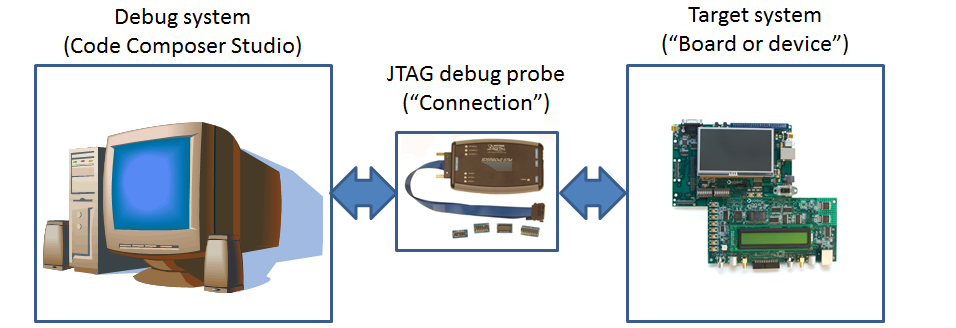The physical debugging setup is shown above, with the two main components involved during a debug session:
- The connection is the piece of hardware between the host PC that runs CCS, and the device or board where the code is supposed to be executed. Throughout this document, the connection will also be called the Debug Probe.
- The Board or Device is the hardware that contains one or more devices required for the executable to run. Throughout this document, it will be called the target.
This setup, when used with CCS, allows the host PC to communicate with the target, load data and code, control the execution of the program loaded via breakpoints/watchpoints and step operations, as well as read data back to the host PC to be displayed in views such as Expressions/Memory/Disassembly.
To properly make CCS aware of the physical aspects of the debugging environment, a Target Configuration File must be created. This file is populated with the appropriate Debug Probe type (XDS, ICDI or MSP-FET) and host interface (USB or Ethernet). This file also contains the exact specification of the Device or Board being used.
Once the Target Configuration File is created and all the appropriate hardware is connected and powered up, the debugger is ready to be launched.
7.1.2. The Launching Process¶
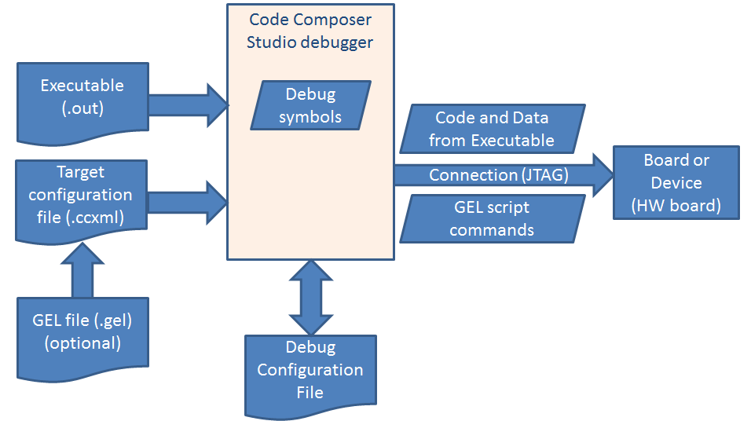The elements of the debug subsystem are shown above and are processed in the following manner:
- At launch, CCS switches the active perspective to the CCS Debug perspective with many views that are useful for the debugging process.
- CCS then parses the Target Configuration File, creates a Debug Configuration, and uses the information in these two files to connect to the JTAG debugger and communicate to the device in the target.
- Once this communication is established, the CCS debugger starts executing a series of hardware initialization commands from a GEL script (if one is configured in the Target Configuration File).
- If loading an executable, the CCS debugger splits the information of the executable file:
- The contents of both code and data sections are sent through JTAG and stored in the appropriate memory locations of the device/board. The placement of this code follows the directives in the Linker Command File.
- The debug symbols are kept on the host PC to allow for correlating the memory addresses of the device/board with the source code of the project.
- The process is the same whether the code is being downloaded to RAM or Flash. For Flash based devices, the built-in flash programmer automatically handles the flashing process.
- The CCS debugger performs one last step: it automatically sets a breakpoint in the device memory address that corresponds to the function main() and runs the device until it breaks at it.
Note
The last step is optional and depends on the settings present inside the Debug Configuration.
Once the launch process is finished, the debugger is ready. It keeps the target halted - waiting for additional interaction and inspection from the user.
- The interaction can be done by issuing commands such as Resume, Suspend, Step Into, Step Over, setting breakpoints/watchpoints, among others
- The inspection can be done by opening the various views such as Disassembly, Memory Browser, Expressions, Registers, among others
The iterative process of debugging and modifying the application can be done by simply rebuilding the project and reloading the code to the target.
7.2. Configuring the Debugger¶
This section covers in detail the two elements responsible for the debugger configuration in CCS: Target Configuration Files and the Debug Configurations.
7.2.1. Target Configuration Files¶
As mentioned in the Debug Overview section, Target Configuration Files are responsible for describing the physical aspects of the debugging environment.
The Target Configuration File is a plain text XML file, with a .ccxml extension, that contains all the necessary information for a debug session: the type of Debug Probe, the target board or device (or even multiple devices), and (optionally) a path to a GEL (General Extension Language) script, which is responsible for performing device and/or hardware initialization.
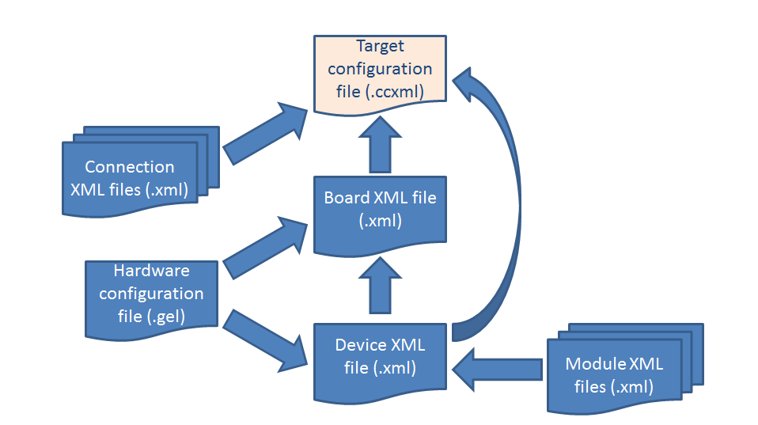As shown above, the Target Configuration File includes one or more connection XML files (one per each core and JTAG entity, but all of them tied to the chosen Debug Probe) and either a Board XML file (which contains a Device XML file plus the GEL script for the board) or a Device XML file directly (which may or may not contain a GEL script). The Device XML file contains the internal JTAG structure of the device and can optionally include several Module XML files, which describe a device’s peripheral registers.
Despite the complexity, there are two simple ways to create the Target Configuration File: Automatically or Manually.
7.2.1.1. Automatic Method¶
This method automatically creates a Target Configuration File when creating a project or modifying its properties.
To create it, simply find out which Debug Probe model (XDS, ICDI, MSP-FET) and interface (USB, Ethernet) is used by your hardware and set this parameter in the drop-down menu Connection in the New Project Wizard or Project settings.
- Common selections for the Connection can be found at the page Common Target Configurations. Simply search for the part number of your development board and find out the appropriate setting.
New project:
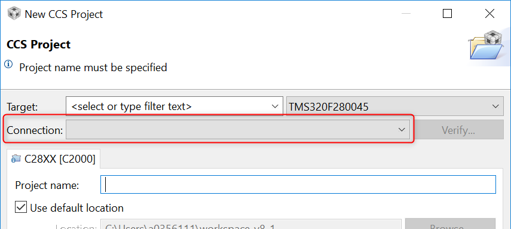Existing project:
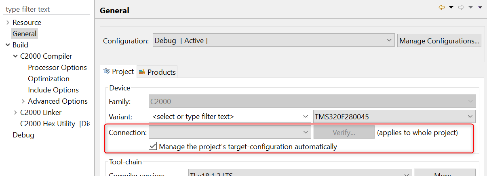- The file is placed in a subdirectory named targetConfigs inside the project directory
- This method is very simple as it automatically assigns the correct device and set it as the Active target configuration for the project
- Several example projects already create this file automatically.
- The Verify button performs a test routine to validate the configuration chosen, similarly to what is shown in the section Test Connection below.
7.2.1.2. Manual Method¶
This method creates a Target Configuration File by manually invoking the Target Configuration Editor.
The Target Configuration Editor is a GUI inside Code Composer Studio that allows creating and modifying Target Configuration Files. It also allows configuring advanced aspects of the Debug Probe and the target, as well as creating configurations for complex devices (with multiple cores) and boards (with multiple devices in the same scan chain).
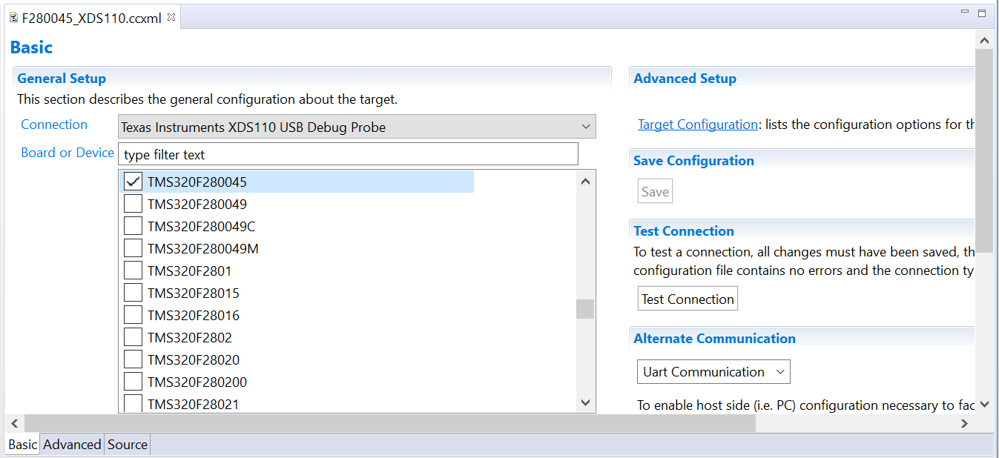- The file can be placed in an arbitrary directory in the system. By default it is the subdirectory ti/CCSTargetConfigurations inside the user area. The location may be changed from CCS menu Window → Preferences → Code Composer Studio → Debug.**
- This method allows for creating configurations for more complex devices or boards, as shown at the Custom Target Cofigurations page.
- The Target Configuration editor can also be used to edit the file that is automatically created with the previous method.
To create the Target Configuration File manually, simply launch the Target Configuration Editor from one of the several places inside CCS:
- Menu File → New → Target Configuration File.
- From the Target Configurations view (menu View → Target Configurations), click on the New Target Configuration File button
- From the project itself by right-clicking on the project and selecting New → Target Configuration File.
7.2.1.3. Test Connection¶
Once the Target Configuration File is created and saved, you can use the Test Connection button to verify that the JTAG connection is working at the lowest level. This button will execute various low level JTAG tests on the configured device.
If the button is grayed out, it means that either the Target Configuration File has not been saved or the connection type being used is not supported (such as non XDS based connections such as MSP-FET430UIF or Jlink).
- For the MSP-FET430UIF, an alternative to the Test Connection button is the Identify… button located next to the connection under the CCS Project Properties → CCS General → Main.
To see a video demo on how to test the connection, check the How to test your JTAG connection with CCS in the References section.
7.2.1.4. Advanced Target Configuration Options¶
The procedure above mostly covers the Basic tab of the Target Configuration editor, but other two tabs are also important:
The Advanced tab allows configuring important parameters of the Debug Probe (mode of operation, clock speed, special signaling, endianness, among others), the device’s internal JTAG structures (addresses, ports, cores), and the addition/removal of GEL startup files.
- One of the most common Debug Probe settings is the clock speed. This is covered in detail in the quicktip videos Experimenting with JTAG clock speed and Experimenting with XDS110 JTAG clock speed in the References section.
- GEL files are typically auto-configured to all board configurations and several devices (when applicable), therefore only need to be added/modified if a specific demand is required. If such editing is required, check the section Adding GEL Files to a Target Configuration.
- Another important setting is the JTAG Mode of operation (JTAG, cJTAG, etc.) of all XDS Debug Probes (except XDS100v1 and XDS100v2). Additional details can be found at the section Debug and trace usage modes of the XDS110 and XDS200 pages.
- This tab also allows to manually specify a Board Data File. Although not typically used, this setting is important under certain circumstances.
The Source tab shows the XML code of the Target Configuration File with all references to the XML files mentioned at the start of this section. This XML source is auto-generated and it is not recommended to manually modify it.
Note
Check the section Advanced Debug Probe Configurations for a complete list of advanced configurations of each debug probe.
7.2.1.5. Launch Context¶
Target Configuration files can be tagged as Active or Default. This tagging affects which configuration the Debug launch button will use. The Debug launch button will search for and use a Target Configuration File in the order below:
- Use the file that is part of the project (physically or linked) - specified as Active
- Use the file that is set as the Default in the Target Configurations view.
One exception is if you have a Target Configuration File opened in the editor and in focus. In this case, the Debug launch button uses it instead of the Default or Active Target Configuration File.
- Active configuration is assigned per project
- Default configuration is set per workspace
7.2.1.6. Target Configuration View¶
The Target Configuration view will display all target configuration files associated to the workspace. Target configurations can be easily managed from this view, including renaming/opening/deleting configurations, setting a configuration as the Default, linking a configuration to an existing project, and so on.
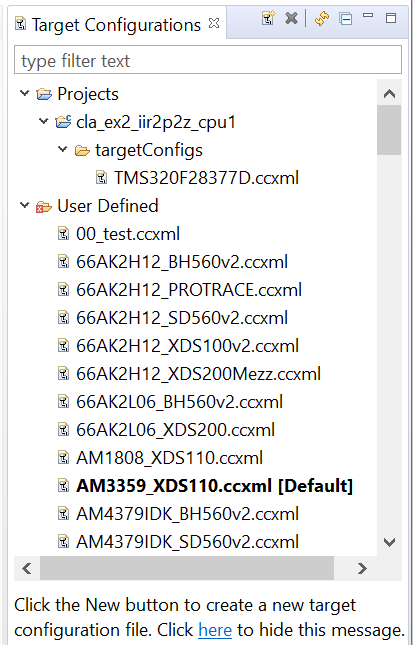The top toolbar contains the following buttons:
- Create a New Target Configuration File.
- Delete the selected target configuration file.
- Refresh the target configuration view.
- Collapse the tree.
- Minimize/maximize the view.
The right-click context menu contains the following options:
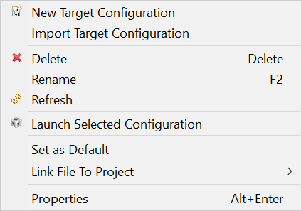Most of the options are self-explainable apart from three of them:
- Set as Default. It sets the highlighted target configuration file as the Default configuration of the workspace, as mentioned in the section Launch Context.
- Link File to Project. This sets the highlighted target configuration as the Active configuration of the selected project, overriding any Default configurations when the project is in focus.
- Properties. This is a shortcut to open the various Debug Properties of the Debug Configurations view.
Note
Video demo: The short video How to use the CCS Target Configuration view demonstrates the features listed above.
Tip
Information about the settings required to configure the Launchpads and other development kits can be found at the Common target configurations page
7.2.2. Debug Configurations¶
A Debug Configuration (sometimes also called Launch Configuration) is the way that standard Eclipse (and by extension, CCS) describes how to launch a program in Debug mode. See the Eclipse FAQ about Launch configurations: What is a launch configuration?
Debug Configurations are unique for each workspace. A Debug configuration can be manually created by going to menu Run → Debug Configurations, or it is automatically created when the debugger is launched. Debug configurations may be cached and reused for future sessions that use the same configuration.
The name and physical location of the debug configuration is determined by how the debugger is launched.
- If the debugger is launched automatically on a project (using the Debug launch button ), the Debug Configuraton has the same name as the project. Physically the files are located in the project subdirectory /.launches
- If the debugger is launched manually, the Debug configuration has the same name as the Target Configuration File. Physically, the files are located in the workspace subdirectory .metadata/.plugins/org.eclipse.debug.core/.launches
Note
One of the advantages of directly editing the Debug Configuration is to automate tasks when loading code to complex devices that have multiple cores. The short video Multicore debugging made easy shows this process.
You can also create and assign a different debug configuration for each build configuration of your project. The short video Customizing debug launch for different build configurations shows the process.
The Debug Configuration contains various settings separated by the following tabs:
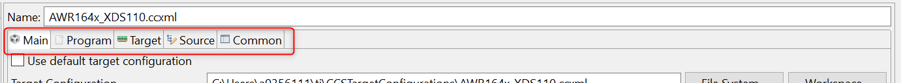Main: Configures the main options for the debugger.
- Target Configuration: Specifies the Target Configuration File
- Initialization Script: (Optional) Points to a DSS JavaScript that can be used to initialize the target, pass parameters, etc. This is useful if you wish to run a custom set of steps during debug launch. Check the short video Customize Debugger Launch with Scripts for more information on using an initialization script.
- JTAG entity checkboxes: Allows selecting what JTAG elements (cores/CPUs, routers, DAPs, etc.) are shown in the Debug view of the debugger. By default, only CPUs are selected.
- Synchronize the properties for all compatible CPUs and Use the same console for the CIO of all CPUs: These two options are applicable to targets with multiple cores. For example, if you wish to display console CIO of the different cores in different views, uncheck the CIO check box.
- Reset Debug Probe Connection S/N: (XDS110 only) Resets the serial number parameter pre-configured in the Target Configuration File. This is useful in case different Debug Probes are being used.
Program: Configures the main options for program loading.
- Device: A drop down selection of each of the JTAG elements (cores/CPUs, routers, DAPs, etc.), which affects the selections in all the options below
- Project and Program: Used to select either the project in the current workspace, or the executable file to be loaded to the JTAG element selected above.
- Loading options: Affects how the executable selected previously will be loaded: either by transferring both data to the target and the symbols to the debugger, or simply loading the just the symbols.
Target: All the options in this tab are described in the section Debug Properties.
Source and Common: All the options in this tab match the standard Eclipse options which are described in the online Eclipse help at Using Run/Debug Configurations
7.2.2.1. Portable Debug Configurations¶
Sometimes it is desirable to share project debug/launch configurations along with the project. In such cases, it is recommended to avoid absolute paths to help with “portability”. While relative paths are not supported in debug/launch configurations, it is possible to avoid absolute paths with the use of some default variables to reference files related to the project. For details, check the topic below: Portable target and debug configurations
7.2.3. Debug Properties¶
There are many settings that define the debug properties, such as Program/Memory Load Options, Auto Run and Launch Options, and On-Chip Flash settings, to name a few. This section describes the more commonly used debug settings.
These settings can be viewed and customized through:
- Project Properties → Debug (if target configuration file is part of the project), or
- Right-click on the target configuration file in Target Configurations view and select Properties.
Note that if you are using the first option above, you need to have already specified a Connection in your Project Properties in order for the Debug Properties to be populated. If you do not explicitly have a Connection specified, it may use the Default target configuration file and show the Properties based on that file which may be incorrect/not match up with your device, so make sure you have the correct Connection selected for your project.
Note
For multi-core devices, make sure the Device drop-down shows the relevant core, for example as shown below for IDK AM65x:
These settings can also be accessed, when already in a debug session (and in the CCS Debug perspective), either by going to:
- menu Run → Debug Configurations, and going to the Target tab or
- menu Tools → Debugger options and/or Tools → On-Chip Flash
The Debug properties are displayed under several categories. Each category allows you to control certain settings related to that category. Most users will not need to modify the default settings. The default settings are optimally chosen based on the processor being debugged, hence they may vary slightly by processor. For example, the default settings for MSP430 may be different than those for F28x.
7.2.4. Program/Memory Load Options¶
This category defines settings related to program/memory loading, verification options, connection options, disabling interrupts, and resetting/restarting target during load.
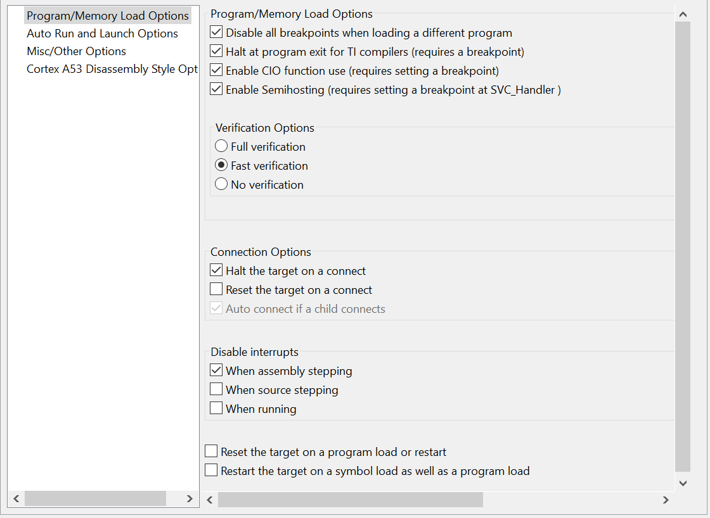Program/Memory Load Options:
- Disable all breakpoints when loading a different program: When loading a different .out file in the same debug session, toggles between maintaining the status of breakpoints previously set or disabling them. This option is enabled by default.
- Halt at program exit for TI compilers (requires a breakpoint): (TI Compiler) When enabled, sets a breakpoint at end of program to allow debugger to halt there. This is only functional when using a TI compiler, which has the predefined symbol
C$$EXITorC$$EXITE. For code in Flash, enabling this option would require the use of a hardware breakpoint resource. - Enable CIO function use (requires setting a breakpoint): (TI Compiler) When enabled, allows having Console I/O output in the Console View by using a breakpoint. For code in Flash, enabling this option would require the use of a hardware breakpoint resource.
- Enable Semihosting (requires setting a breakpoint at SVC_Handler): (GCC Compiler) When enabled, allows having Console I/O output in the Console View This is available only for certain devices (Cortex A/M). See the CCS Semihosting page for more information.
Verification Options: After the code/data is loaded to the device, sets the level of verification performed on it. This is done by reading back the code/data from the device's memory and comparing it to the executable on the host. The choices are:
- Full: Reads back the entire program loaded to the device. This is the default option for MSP430.
- Fast: Reads back only the first and last 20 words loaded to the device. This is the default option for all other devices.
- No verification: No verification is performed.
Connection Options: These settings control actions performed immediately after the Debug Probe connects to the target device. The choices are:
- Halt the target on a connect: Halts the core execution. It is set by default in all devices.
- Reset the target on a connect: Issues a soft reset on the device.
- Auto connect if a child connects: Enables a proper connection to the cores in complex SoC devices. This option should be used only in specific cases.
Disable interrupts: These settings control whether to disable or enable interrupts when stepping and/or running code. The options are self-explainable.
Reset the target on a program load or restart: Issues a soft reset on the target device when a program is loaded or restarted.
Restart the target on a symbol load as well as program load: Issues a restart when either symbols or a program is loaded to the target device. A Restart simply re-positions the PC register to the entry point (typically ``_c_int00``(TI Compiler) or the reset vector).
7.2.5. Auto Run and Launch Options¶
This category defines Realtime Options, Auto Run Options, and Launch Options.
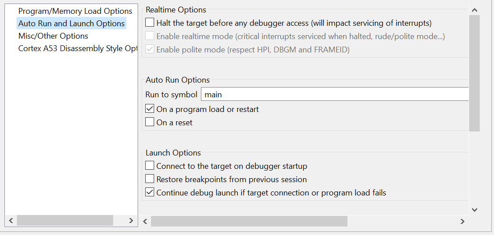Realtime Options: These options control real-time access to the target device.
- Halt the debugger before any debugger access: Enables transparent access from the Debugger to the target device and its memory by performing an automatic sequence of Halt ► Access ► Resume. This option has the potential to disrupt the service of time critical interrupts, therefore it is disabled by default.
- Enable realtime mode: Enables complete memory and control access to the target without the need to halt it. Additional details are shown in the section Real-time Mode.
- Enable polite mode: Enables the polite real-time mode, which respects the current device status. Additional details are shown in the section Real-time Mode.
Auto Run Options: These options control which condition will cause the debugger to automatically run to and halt at the pre-defined symbol. By default, this symbol is set to run to main() On a program load or restart.
- This symbol can be set to any other C or assembly symbol desired.
- If leaving the symbol field empty and disabling all the checkboxes, the debugger will be halted at the code entry point (typically
_c_int00(TI Compiler) or the reset vector) when the executable is loaded. - If leaving the symbol field empty but leaving at least one of the checkboxes enabled, the debugger will run the target immediately after the code is loaded and left in a running state.
Warning
If an invalid symbol is specifed, or the target is unable to reach the specified symbol location, the target will run immediately after the code is loaded and left in a running state.
Launch Options: These options control the actions taken automatically when the debugger is launched.
- Connect to the target on debugger startup: When performing a Manual Launch, this step is skipped by default. This option should not be enabled with SoCs, given that most cores are held in reset during the debugger startup.
- Restore breakpoints from previous session: Restores all breakpoints and their status from a previous debug session. This option is very useful to reduce the setup time when performing sequential debugging sessions on the same target device and hardware.
- Continue debug launch if target connection or program load fails: In case of errors, the debug launch process will continue normally. The sources of errors are commonly caused by a project that fails to build or connection problems between the host and the target device.
7.2.6. Misc/Other Options¶
This category defines OS Aware debug Options (when doing OS Aware debugging) and other miscellaneous options.
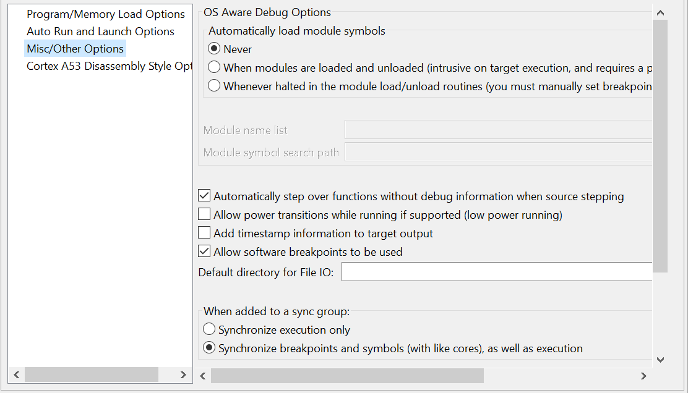OS Aware Debug Options: These options control the Debugger awareness level when used with a High Level Operating System, such as embedded Linux or Android.
- The proper use of this option requires a device driver built into the OS to properly correlate the source code.
Automatically step over functions without debug information when source stepping: Enables a Step Over operation if the function does not have symbols and source code loaded into the debugger. If disabled, the debugger performs an Assembly Step Into for these functions.
Allow power transitions while running if supported (low power running): Maintains the JTAG Debug Probe connection when the target device goes through a power transition or reset. This is heavily dependent on the device and board capabilities.
Add timestamp information to target output: Adds timestamps to operations in the target that print out information in the Console View (GEL, Console I/O, etc.)
Allow software breakpoints to be used: Enables the use of Advanced Event Triggering (AET) resources to enable software breakpoints to be used when allowed by the target device. This is advantageous given that hardware breakpoints are limited in number by the target device, while software breakpoints are completely unlimited.
Default directory for file IO: Sets the default directory for any File I/O operations.
When added to a sync group: These options control the level of interaction when synchronized execution (Sync Group) is enabled. This is dependent on the target device and is effective with Symmetrical Multi Processing (SMP). Check the document SMP Debug with CCS in the section References.
7.2.7. Disassembly Style Options¶
7.2.7.1. ARM¶
This category is only applicable for ARM7, ARM9, Cortex R/A devices and sets the mode in which instructions are displayed in the Disassembly View.
Cortex R4, R5, A8, A9 and A15:
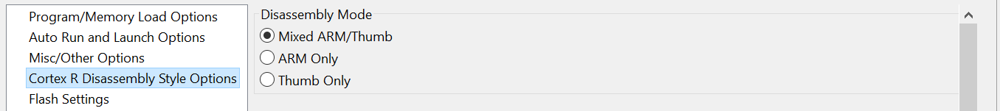Cortex A53:
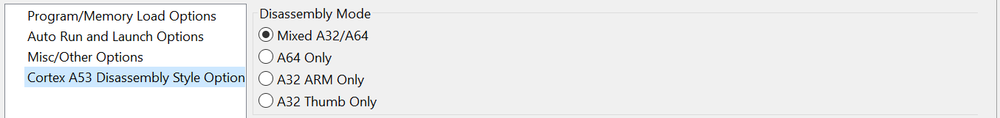The default is Mixed ARM/Thumb or Mixed A32/A64 and automatically selects the mode depending on the core mode (the CPSR/xPSR register).
7.2.7.2. F28x¶
This category is only applicable for F28x devices and sets the mode for the Disassembly View.
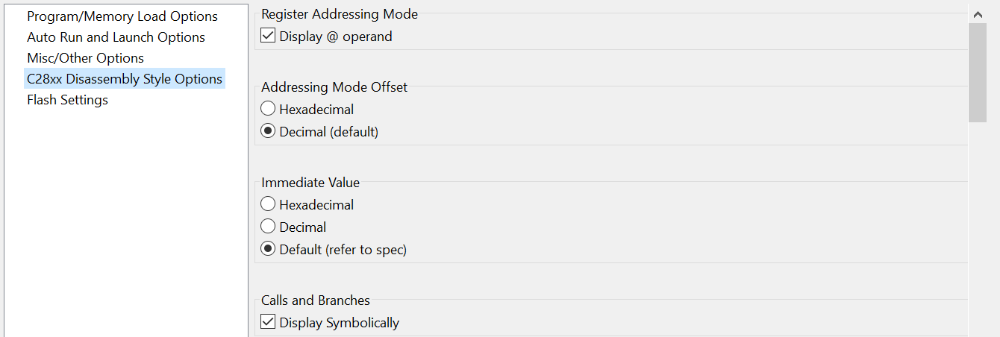The default options are shown above.
7.2.8. Flash Settings¶
This category defines several flash memory related settings and operations that are described in more detail in the section Configuring Flash Settings.
7.2.9. MSP430 Debugger Options¶
This category is only applicable for MSP430 and sets several debugger options:
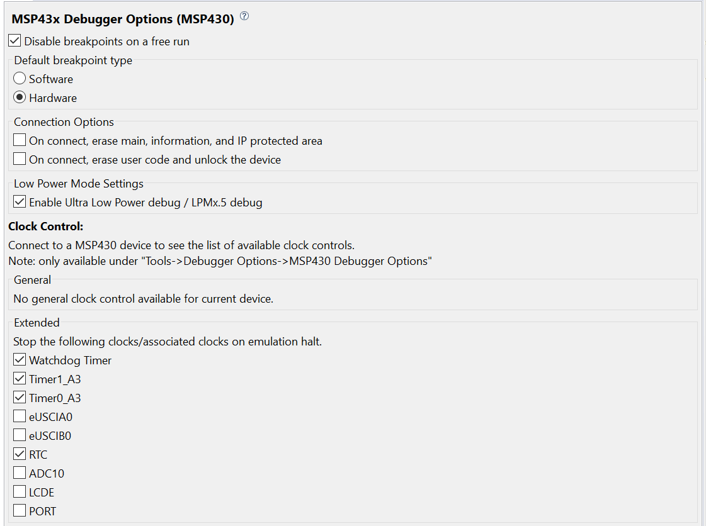Disable breakpoints on a free run: Disables all breakpoints when the Free Run option is used. For certain devices, Free Run is a less obtrusive mode of running the device through power transitions and low-power modes.
Default breakpoint type: Sets which default breakpoint will be used. Hardware breakpoints are mandatory for code located in Flash or ROM, thus this is the default option for this device.
Connection Options: These options set the actions performed by the debugger during connection.
Low Power Mode Settings: Maintains the JTAG Debug Probe connection when the target device goes through a ULP mode.
Clock Control: Allows full control over the clocks that are stopped upon emulation halt. The debugger must be connected to the target device to get a list of available clocks.
Additional details can be seen at the document CCS IDE for MSP430 MCUs
7.3. Launching a debug session¶
Once a configuration is created, the debugging process can be launched either automatically (Automatic Launch) or manually (Manual Launch):
7.3.1. Automatic Launch¶
This process launches a Project-based debug session. Simply highlight the project in the Project Explorer view and do one of the following options:
- Go to menu Run → Debug (or the F11 key).
- Click on the Debug launch button
Note
If a project has multiple target configuration files, the Active configuration of the project will be launched.
This will perform the sequence of steps shown in the section The Launching Process. In summary:
- Switch to the CCS Debug perspective.
- Connect to the Debug Probe.
- Prompt for which core the program needs to be loaded (this is usually done only once if the device has multiple cores of the same ISA).
- Automatically connect to the core/device.
- Run any GEL scripts to configure the traget (if configured on the Target Configuration File).
- Load the project’s executable file (.out) to the core/device memory. The code will be automatically written to the on-chip flash memory of the MSP430, F28x and SimpleLink MCU devices.
- Run to the function
main()if configured in the Debug Configurations.
Note
The code will be automatically written to the on-chip flash memory of the Simplelink MCU, MSP430, F28x, Hercules and Digital Power devices. To configure the flash loader properties, check the Debug Configurations or the Flash Settings.
Note
Launching the debugger will cause CCS to build the active project if any modifications to the source code or the build options are made.
7.3.2. Manual Launch¶
This process launches a Project-less debug session. Simply highlight a Target Configuration File in the Target Configurations view and do one of the following options:
- Right-click on the desired target configuration file and select Launch Selected Configuration.
- Double-click on the desired target configuration file to open the Target Configuration Editor and click on the Debug launch button
Note
If no target configuration file or project is highlighted, the Default configuration of the workspace will be launched.
This will perform the sequence of steps shown in the section The Launching Process. In summary:
- Switch to the CCS Debug perspective.
- Connect to the Debug Probe.
- The manual launching process stops at this point, but additional manual steps can be done:
- Connection to a core can be established by right-clicking on the core and selecting Connect. Once the core finishes executing its initialization GEL script (if one is specified), the code or symbols can be loaded by going to menu Run → Load → Load Program or Load Symbols. Load Program loads the executable file, produced by building your project, onto the target board. Load Symbols loads the debug symbol information only. It is useful when working in a debugging environment where the debugger need not load the object code, but simply debug existing code in Flash. When loading symbols, the existing symbol table is cleared before adding new symbols.
- Connection to a JTAG entity (ICEPICK router, DAP, etc.) can be done by right-clicking on the Debug view and selecting Show All Cores.
Launching the debugger manually can be useful in many scenarios:
- If you don’t have a CCS project or simply have an executable or binary file to be loaded to the target.
- It helps troubleshooting any JTAG connectivity issues.
- It can be a convenient when connecting to targets that have multiple cores, as some of them are held in reset when the device is powered up.
- It can be a convenient if you do not want to load code to the target, but want to simply debug code that was previously flashed. In this case the debug launch is usually followed by loading symbols.
- It can be useful to debug an ARM Cortex core by accessing its memory map directly via the Debug Access Port (DAP). The short video How to access memory using the DAP in the References section shows how to do that.
Note
For a project-less debug session, CCS may sometimes not be able to locate the source files to do the source-disassembly correlation. In such cases, there are a couple of ways to tell the debugger where to look for sources. Please see the section Debugging Library Code.
7.4. Debugging the application¶
The process of debuggging the application requires multiple features and helper views that allow complete control over the execution state of the target. Also, many data views complete the picture by exposing the status of the various subsystems of the target. This section describes some of these views and features.
7.4.1. After Launch¶
After launching, the Eclipse perspective is switched from the CCS Edit to the CCS Debug (indicated at the top right corner of the Workbench), with the default arrangement of views shown below.
Note
The display contents can greatly vary depending if changes were done in a prior run or if a different Debug Probe, target, and code are used.
- The Debug view contains the target configuration and the call stack for each core.
- The source code view shows the program halted at the beginning of
main(). - For convenience, the Variables, Expressions, and Registers views are also opened by default.
- If the target configuration requires a script to run before the code is loaded, the Console view will open.
Basic debugging functionality is located in the bar at the top of the Debug view.
- Resume: Starts execution of the target core.
- Suspend: Halts the exeuction of the target core.
- Terminate: Disconnects from all hardware (cores, devices, Debug Probes) and terminates the Debug Session. Closes the CCS Debug perspective and returns of the CCS Edit perspective.
- Step Into: Executes a single source line, jumping into subroutines or functions, allowing you to run the its internal code step-by-step.
- Step Over: Similar as above, but jumping over subroutines or functions, running its internal code all at once.
- Step Return: Similar as above, but running all lines, subroutines or functions until it reaches the caller function (given by the call stack or
return()).
Note
Hidden from the bar is an addition option called *Free Run. This option will run the target and then detach the debug connection. The behavior of the run would be similar to as if the physical JTAG connection was disconnected. This type of run behavior would prevent the periodic polling of the debugger for the target status. Any breakpoints set by the debugger on the target would also be disabled.
The extended bar shows advanced debugging tools in addition to the basic ones above.
- Terminal: Opens a Terminal View.
- Runtime Object Viewer: Launches the Runtime Object Viewer for SYSBIOS and TI-RTOS systems.
- Connect/Disconnect: Connects or disconnects from the core highlighted in the Debug view below.
- Restore Debug State: Restore all debug settings from the core or device most recently disconnected or terminated. Among the settings restored are hardware and software breakpoints, global breakpoints, profiling state, among others.
- Load: Loads code to the highlighted core in the Debug view below. The small inverted arrow allows selecting the other operations Reload Program, Load Symbols, Add Symbols, Verify Program, and Remove All Symbols.
- Real-time modes: Enables/disables the Real-time modes supported by the core.
- Reset: Performs a reset on the core or device. The small inverted arrow allows selecting among the available resets
- Restart: Issues a restart when either symbols or a program is loaded to the target device. A Restart simply re-positions the PC register to the entry point (typically
_c_int00or the reset vector). - New Breakpoint: Adds or toggles a Breakpoint at the line pointed by the mouse cursor. The small inverted arrow allows selecting among the available types of breakpoints.
- Debug As: Starts a new Debug Session, terminating the currently active one. The small inverted arrow allows selecting among the previously launched Debug Sessions.
- Assembly Step Into: Executes a single assembly instruction, jumping into subroutines or functions, allowing you to run its internal code step-by-step.
- Assembly Step Over: Similar as above, but jumping over subroutines or functions, running its internal code at once.
- EnergyTrace: Starts a EnergyTrace session.
Note
These toolbar functions are also available in both the menus Views and Target, which also feature several additional options.
7.4.2. Debug view¶
The Debug view is the most prominent view when the debugger is launched. It is opened by default.
Without a program loaded:
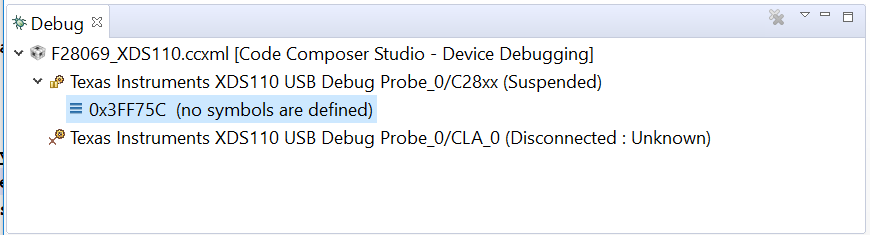With a program loaded:
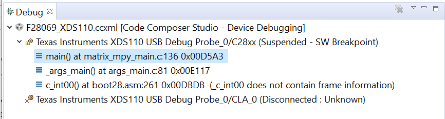It contains several areas:
A tree that shows the target configuration file used and the type of Debug Session being used (Code Composer Studio - Device Debugging is the default type).
A series of nodes that show the Debug Probe that is linked to each core of the target, followed by its status:
- Disconnected or Connected
- Unknown, Suspended, Suspended
- SW Breakpoint, Suspended
- HW Breakpoint, Running, Free Running are the most common.
Either the current address of the Program Counter or the call stack of the program currently loaded.
Right-clicking on it shows the following context menu:
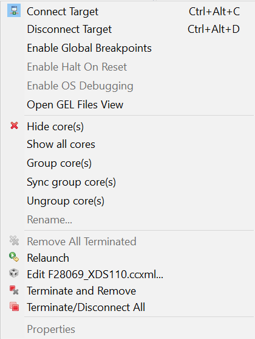7.4.3. Watching Variables, Expressions, and Registers¶
The cluster of tabbed views named Variables, Expressions, and Registers is opened when the debug session is launched.
7.4.3.1. Variables View¶
The Variables view shows only local variables that belong to the function currently being executed.
Variables that contain more than one element (such as arrays, structures, or pointers) are displayed with either a plus sign (+) or minus sign (-) immediately preceding the expression name.
- The (+) symbol indicates that the expression contains elements that can be further expanded.
- The (-) symbol indicates that the expression is fully expanded and can be collapsed to reduce the information displayed.
Variables whose values have changed since the last time they were seen are highlighted in a yellow background. Whenever the situation permits it, the value of a variable may be modified by clicking its Value column and entering a new value.
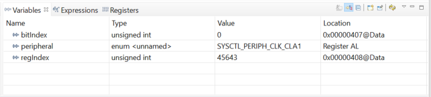It consists of the following columns:
- Name: Name of the variable.
- Type: The variable datatype.
- Value: The value of the variable. For arrays, this field displays the first few values of its elements.
- Address: The address of the variable in the device memory.
- In devices that have separate program and data pages, this is suffixed by the at symbol (@) followed by the page name (Program, Data, IO).
- If the variable is allocated to a register, this field will show the word Register followed by its register name.
Note
This view does not allow adding or removing rows, since it is automatically populated by the variables present on the context of the program being debugged.
The toolbar contains several formatting options.
The options are:
- Show type names: Shows the type names when columns are disabled. This option is always disabled in the CCS debug sessions.
- Show logical structure: Shows the logical structure types of large variables (structs, objects, etc.). This option has no effect on CCS debug sessions.
- Collapse All: Collapses all expanded variables or registers.
- Open new view: Opens a new view to allow side-by-side comparison of values.
- Pin to debug context: When debugging devices with multiple cores, this option locks the view to the core in context.
- Refresh: Updates the contents of the view with data from the target.
- View Menu: Drop-down menu with several options to customize how the data is displayed inside the view.
- Minimize/Maximize: Minimize or maximize the view.
Right-clicking on a given variable shows the following context menu:
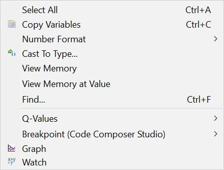The options are:
- Select All: Selects all variables shown on the view.
- Copy Variables: Copies the selected variables in a tab separated format.
- Number Format: Changes the numeric format of the selected variable to Hex, Decimal, Octal or Binary.
- Cast To Type: Changes the data type format of the selected variable to any C-valid data type.
- View Memory: Opens a Memory Browser View at the location of the selected variable
- View Memory at Value: Similar as above but at the location pointed to by the selected variable
- Find: Search for variable names
- Q-Values: For signed integers, changes the representation of the variable to Q format.
- Breakpoint (Code Composer Studio): Sdds a Watchpoint to the variable location in memory.
- Graph: Opens a Graph using the parameters of the selected row. Cannot be used for multiple rows.
- Watch: Adds the variable to the Expressions View.
7.4.3.2. Expressions View¶
The Expressions view is a typical watch window where variables (local, global, static), C-valid expressions, and even registers can be monitored.
Expressions that contain more than one element, such as arrays, structures, or pointers, are displayed with either a plus sign (+) or minus sign (-) immediately preceding the expression name.
- The (+) symbol indicates that the expression contains elements that can be further expanded.
- The (-) symbol indicates that the expression is fully expanded and can be collapsed to reduce the information displayed.
Expressions whose values have changed since the last time they were seen are highlighted in a yellow background. Whenever the situation permits it, the value of an expression may be modified by clicking its value column and entering a new value.

To add a variable, simply select the column that reads Add new expression and type a valid expression.
It consists of the following columns:
- Name: Name of the variable.
- Type: The variable datatype.
- Value: The value of the variable. For arrays, this field displays the first few values of its elements.
- Address: The address of the variable in the device memory.
- In devices that have separate program and data pages, this is suffixed by the at symbol (@) followed by the page name (Program, Data, IO).
- In devices that have a Memory Management Unit (MMU), this variable will show by default the address from the CPU context. Its address can be mapped to the physical address by adding the at (@) symbol followed by the word PHY (for physical).
- If the variable is allocated to a register, this field will show the word Register followed by its register name.
The toolbar contains several formatting options.
The options are:
- Show type names: Shows the type names when columns are disabled. This option is always disabled in CCS debug sessions.
- Show logical structure: Shows the logical structure types of large variables (structs, objects, etc.). This option has no effect in CCS debug sessions.
- Collapse All: Collapses all expanded variables or registers.
- Create a new watch expression: Identical function to the Add new expression, but opens a dialog box that allows easier editing of complex expressions.
- Remove Selected Expressions/Remove All Expressions: Removes the selected or all expressions of the view.
- Continuous Refresh: Updates the contents of the view with data from the target at a constant rate (configurable by the View Menu option).
- Open new view: Opens a new view to allow side-by-side comparison of values.
- Pin to debug context: when debugging devices with multiple cores, this option locks the view to the core in context.
- Refresh: Updates the contents of the view by loading them from the target.
- View Menu: Drop-down menu with several options to customize how the data is displayed inside the view.
- Minimize/Maximize: Minimize or maximize the view.
Right-clicking on a given variable shows the following context menu:
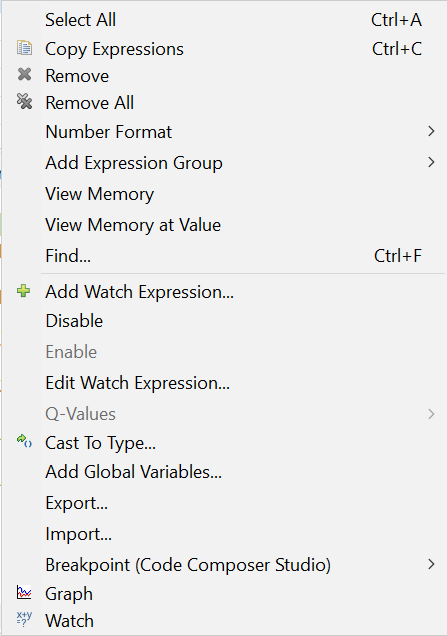The options are:
- Select All: Selects all variables shown on the view
- Copy Expressions: Copies the selected variables in a tab separated format
- Remove/Remove All: Removes the selected or all expressions of the view.
- Number Format: Changes the numeric format of the selected variable to Hex, Decimal, Octal or Binary.
- Add Expression Group:
- View Memory: Opens a Memory Browser View at the location of the selected variable.
- View Memory at Value: Similar as above but at the location pointed to by the selected variable.
- Find: Search for variable names.
- Add Watch Expression: Identical function to the Create a new watch expression.
- Disable/Enable: Disables or enables updates to the selected expression(s). Useful for improving performance during debug by preventing additional data transfers from the target.
- Edit Watch Expression: Allows editing the selected expression and opens the same dialog box for easier editing of complex expressions.
- Q-Values: For signed integers, changes the representation of the variable to Q format.
- Cast To Type: Changes the data type format of the selected variable to any C-valid data type.
- Add Global Variables: Add global variables with a useful dialog box that lists all global variables loaded to the target. The global variables can be searched by name.
- Export/Import: Export or import the entire contents of this view to ease the task of configuring future debug sessions.
- Breakpoint (Code Composer Studio): Adds a Watchpoint to the variable location in memory.
- Graph: Opens a Graph Using the parameters of the selected row. Cannot be used for multiple rows.
- Watch: Adds the variable to the Expressions View.
7.4.3.3. Registers View¶
The Registers view allows viewing and editing the contents of core and peripheral registers of the device, including bitfields and individual bits. Register values that have changed are highlighted in a yellow background. To change a register or register bit field value, single click in the value column of the register and modify it. This is only allowed for registers that are not read-only.
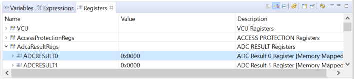It consists of the following columns:
- Name: Name of the register, bitfield or bit.
- Value: Value of the register, bitfield or bit.
- For bitfields and bits, this column can either have a freeform box to input the values directly or a drop-down with valid values.
- Description: Brief description of the register, bitfield or bit.
Note
This view does not allow adding or removing rows, as they are automatically populated with the device information.
The toolbar contains several formatting options.
The options are:
- Show type names: Shows the type names when columns are disabled. This option is always disabled in the CCS debug sessions.
- Show logical structure: Shows the logical structure types of large registers. This option has no effect in CCS debug sessions.
- Collapse All: Collapses all expanded registers.
- Continuous Refresh: Updates the contents of the view with data from the target at a constant rate (configurable by the View Menu option).
- Open new view: Opens a new view to allow side-by-side comparison of values.
- Pin to debug context: When debugging devices with multiple cores, this option locks the view to the core in context.
- Refresh: Updates the contents of the view by loading them from the target.
- View Menu: Drop-down menu with several options to customize how the data is displayed inside the view.
- Minimize/Maximize: Minimize or maximize the view.
Right-clicking on a given register, bitfield or bit shows the following context menu:
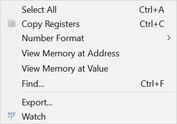The options are:
- Select All: Selects all variables shown on the view.
- Copy Registers: Copies the selected registers in tab separated format.
- Number Format: Changes the numeric format of the selected register to Hex, Decimal, Octal or Binary.
- Cast To Type: Changes the data type format of the selected register to any C-valid data type.
- View Memory at Address: Opens a :ref:memory-browser-view` at the Location of the selected register.
- View Memory at Value: Similar as above but at the Location pointed to by the selected register.
- Find: Search for register names.
- Export: Opens a dialog that allows selecting one or more registers to be exported to a .txt file.
- Watch: Adds the register to the :ref:expressions-view`.
7.4.4. Disassembly View¶
The Disassembly view is an integral part of the debugger that translates machine language into assembly language, as it displays the disassembled instructions and symbolic information needed for debugging. This view is not opened by default but can be viewed by going to menu View → Disassembly, unless there is no loaded program or there are no debug symbols attached to the program.
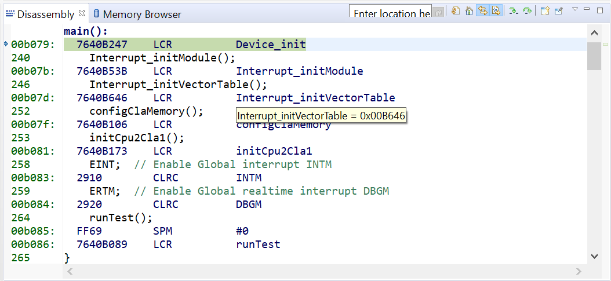The Disassembly view contains several fields in its default configuration:
- At the left of the view the program addresses are shown
- The line numbers of the source file in context are also shown, if the loaded program contains symbolic debug information and the option Show Symbols is enabled.
- Still at the left of the view, the small blue arrow indicates the location of the Program Counter - the next instruction to be executed.
- To the right of the addresses the opcode is shown in hex format, as well as the disassembled instruction.
- If the opcode references a function or variable, their names are also shown if debug symbols are present.
- Hovering the mouse cursor over a specific function name shows its name and the address.
- To the right of the line numbers the actual C source code is shown.
Many other features can be displayed depending on the options enabled.
The toolbar contains several functions:
The options are:
- Address box: This box allows typing an address or a symbol name to navigate to the directory.
- Refresh view: Updates the contents of the view by loading them from the target.
- Go to Current Program Counter (Home): Scrolls the view to the current Program Counter position.
- Link with Active Debug Context: When debugging devices with multiple cores, this option locks the view to the core in context.
- Show source: Enables viewing the source code intertwined with the assembly.
- Assembly Step Into: Executes a single assembly instruction, jumping into subroutines or functions, allowing to run its internal code step-by-step.
- Assembly Step Over: Similar as above, but jumping over subroutines or functions, running its internal code at once.
- Open new view: Opens a new view to allow side-by-side comparison of values.
- Pin to debug context: When debugging devices with multiple cores, this option locks the view to the core in context.
- View Menu: Drop-down menu with several options to customize how the data is displayed inside the view.
- Minimize/Maximize: Minimize or maximize the view.
Right-clicking on the main view shows the following context menu:
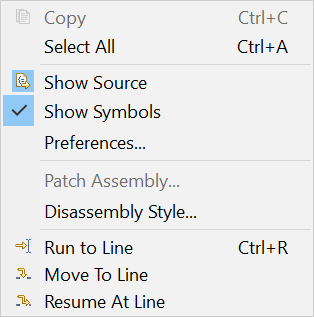The options are:
- Copy: Copies the selected content in text form.
- Select All: Selects all content shown on the view.
- Show Source: Shows source code intertwined with the disassembled instructions.
- Show Symbols: Shows the debug symbols at their corresponding addresses.
- Preferences... Opens the Preferences view with display options.
- Patch Assembly... Allows editing the memory to modify opcodes.
- Disassembly Style... Shows a list of disassembly styles and allows switching among the various types. Device dependent.
- Run to line: Runs to the line pointed by the mouse cursor.
- Move to line: Moves the PC register to the line pointed by the mouse cursor.
- Resume at line: Moves the PC register to the line pointed by the mouse cursor and starts running from this point.
Right-clicking on the address view shows the following context menu:
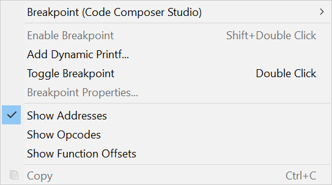The options are:
- Breakpoint: Adds or toggles a Breakpoint at the line pointed by the mouse cursor.
- Enable/Disable Breakpoint: Enables/disables a Breakpoint previously added to the line pointed by the mouse cursor.
- Add Dynamid Printf: (C/C++ Eclipse debugger only) dds a watchpoint that prints out a message when the Program Counter reaches the line pointed by the mouse cursor.
- Toggle Breakpoint: Adds or removes a Breakpoint at the line pointed by the mouse cursor.
- Breakpoint Properties: Opens the dialog box to set the properties of the Breakpoint.
- Show Addresses: Shows the memory addresses at the left of each disassembled line.
- Show Opcodes: (C/C++ Eclipse debugger only) Shows the opcodes of the assembly instructions.
- Show Function Offsets: Shows the offsets relative to the prior function symbol defined in memory. Requires that debug symbols are previously loaded to the debugger.
- Copy: Copies the selected content in text form.
7.4.5. Memory Browser View¶
The Memory Browser view is another integral part of the debugger that shows the contents of the target memory starting at a specified address and with various data formatting features. The memory view is not opened by default but can be viewed by going to menu View → Memory Browser.
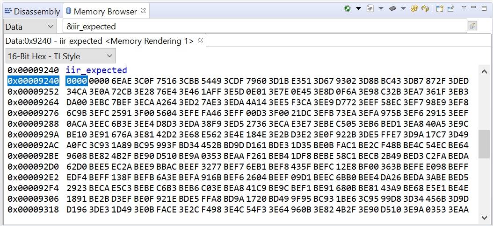It features multiple viewing formats and types: char, integer (signed/unsigned), float and multiple Hexadecimal data sizes (8 through 64-bits). Additional capabilities include: memory fill with predefined values, save to/load from files in the host PC, all the variables and functions can be viewed, and every memory position has a context-sensitive information box.
In certain architectures it can also display cache information:
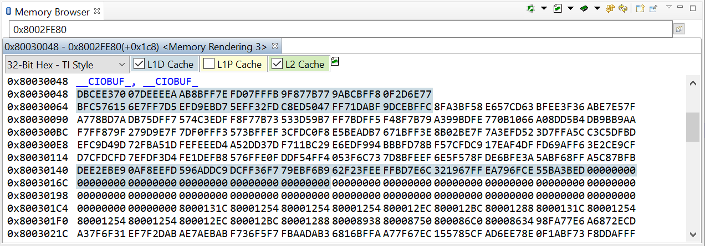To use it, simply enter a starting address in the Address Text box at the top of the view and select the appropriate memory page of the device.
Note
F28x MCUs, C5500 DSPs and PRU cores have separate code, data and I/O memory pages.
The contents of a selected memory location can be edited by double-clicking the value.
Multiple instances of the Memory view can be displayed simultaneously, allowing comparisons of memory contents.
- Any property changes made within an open memory view apply only to that memory view.
The toolbar contains several functions:
The options are:
- Load / Save / Fill Memory: This button accesses the options to Load and Save Memory and Fill Memory.
- Virtual/Physical Memory View: Toggles between the Virtual and the Physical memory contents. For C6600 cores, it bypasses the MPAX for full 36-bit addressing. For Cortex A cores, it bypasses the Memory Management Unit (MMU).
- Memory Analysis: It toggles the cache memory coloring. Device dependent.
- Continuous Refresh: Updates the contents of the view with data from the target at a constant rate (configurable by the View Menu option).
- Refresh: Updates the contents of the view by loading them from the target.
- Open new view: Opens a new view to allow side-by-side comparison of values.
- Pin to debug context: When debugging devices with multiple cores, this option locks the view to the core in context.
- View Menu: Drop-down menu with several options to customize how the data is displayed inside the view.
- Minimize/Maximize: Minimize or maximize the view.
Right-clicking on the memory view shows the following context menu:
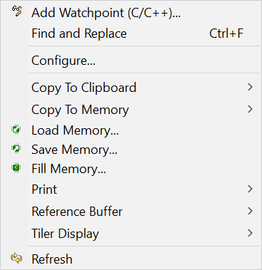The options are:
- Add Watchpoint (C/C++)…: Adds a Watchpoint to the highlighted address.
- Find and Replace: Search and replace data patterns in the target memory.
- Configure…: Configures what elements are displayed on the view, as well as the behaviour when saving modifications to the target memory.
- Copy to Clipboard? Copies the contents of the highlighted address or the entire view to the host clipboard.
- Copy to Memory? Copies the contents of the highlighted address or the entire view to another address region in the target memory.
- Load Memory: Loads contents of a file in the host to the target memory. Check the section Load and Save Memory.
- Save Memory: Saves the contents of the target memory to a file in the host. Check the section Load and Save Memory.
- Fill Memory: Fills contents of the target memory with configurable data types, address and memory length. Check the section Fill Memory.
- Print: Sends the contents of the highlighted address or the entire view to a printer attached to the host.
- Reference Buffer: Captures and saves a linear buffer (reference) to memory so it can be easily compared with changes as the code execution progresses.
- Tiler Display: Formats the memory contents to be displayed as a two-dimensional frame of data in 4x4 or 8x2 arrangements. Very useful for video processing.
- Refresh: Updates the contents of the view by loading them from the target.
7.4.5.1. Load and Save Memory¶
The Load Memory dialog is shown below. The Save Memory dialog is very similar.
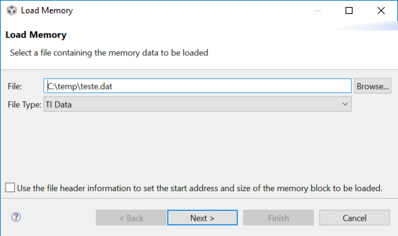It supports several data formats and settings:
- TI Data: A text file that follows the TI .dat file format. It parses the file and automatically fills the target memory address and length of the data to be copied.
- TI Raw Data: A text file with no preformatted data. It requires providing the target memory address where the data will be copied and the type size of the source file.
- Binary: A bitstream of binary data. It requires providing the target memory address where the data will be copied.
- COFF: A binary file that follows the TI COFF file format. It parses the file and automatically fills the memory.
- ELF: A binary file that follows the ELF file format. It parses the file and automatically fills the memory. Not supported by the Save Memory function.
- Hex: A text file that follows the Hex file format. It parses the file and automatically fills the memory. Not supported by the Save Memory function.
For additional information about the various data formats supported by the Save Memory function, please check the section Data File Formats.
7.4.5.2. Fill Memory¶
The Fill Memory dialog is shown below.
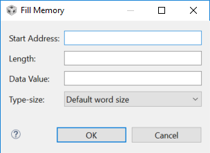The options are:
- Start Address: Sets the initial address to be filled.
- Length: Sets the amount of words in memory to be filled. The word size is defined in the Type-size setting.
- Data Value: Sets the data to be filled. Its size must match the Type-size setting.
- Type-size: Sets the size of the data to be written to the target memory. It can be set to the default size defined by the hardware ISA or to an arbitrary value.
7.4.6. Console View¶
The Console view is another integral part of the debugger that shows several informative messages of the debug session. It is not opened by default but it is usually shown as soon as the Debug Session starts to show various status and progress messages.
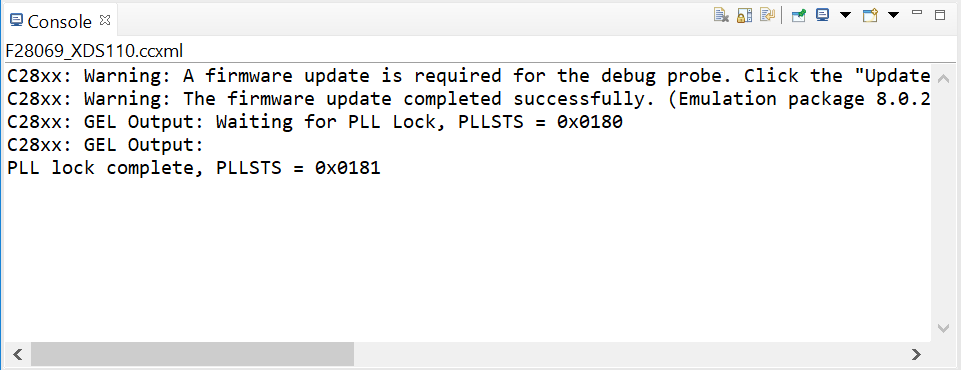Among the several messages it can display are:
- Output from the target configuration scripts (GEL scripts).
- Errors and Warnings coming from the Debug Probe or its protocol stack.
- Any Console I/O output coming from
printf()statements in the code.
For multi-processor environments, there is the possibility of having multiple Console views tied to each core.
The toolbar contains several functions:

- Clear Console: Clears the contents of the Console view.
- Scroll Lock: Locks the automatic scroll when new content is added.
- Word Wrap: Wraps long lines of the text output to fit the width of the view.
- Pin Console: When debugging devices with multiple cores, this option locks the view to the core in context.
- Display Selected Console: Allows selecting the multiple types of consoles available: Build, CIO and GEL output are the most common.
- Open Console: Creates a new Console view, which can be useful to monitor multiple cores or the output of multiple sources of data.
- Minimize/Maximize: Minimize or maximize the view.
Right-clicking on the Console view shows the following context menu:
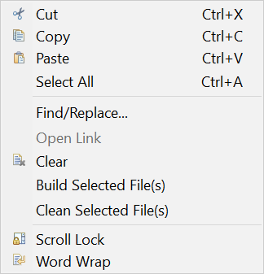- Cut/Copy/Paste: Cuts, copies or pastes information to/from the clipboard.
- Select All: Selects all text in the view.
- Find/Replace: Search and replace strings in the view.
- Open Link: Opens a URL or a HTML link on an external web browser.
- Clear: Clears the contents of the Console view.
- Scroll Lock: Locks the automatic scroll when new content is added.
- Word Wrap: Wraps long lines of the text output to fit the width of the view.
7.4.7. Breakpoints¶
Breakpoints are one of the most basic features in any debugger, allowing the execution of the processor or core to halt at a pre-defined place in the code.
Breakpoints can be set at a line in a source file, which gets translated to an address in the device memory, or directly at an address in the Disassembly View. They can also be set on a method in the Outline or Project view.
They are displayed at the left side of the source editor view (in the vertical editor ruler, together with line numbers, code folding symbols, and others) and in the Breakpoints View.
Breakpoints can also be enabled or disabled via the context menu in all the views. An enabled breakpoint causes a thread to suspend whenever the breakpoint is encountered. Enabled breakpoints are shown in blue and have a checkmark overlay once successfully set up by the debugger (Software breakpoint: , Hardware breakpoint: ). A disabled breakpoint does not cause threads to suspend and are greyed out in all views.
There are two types of breakpoints: Software and Hardware.
A Software breakpoint is implemented as an opcode replacement. The debugger modifies the opcode by inserting an estop_0 instruction where the previous instruction was. The program counter stops immediately before it executes the software breakpoint instruction. In general this instruction is hidden from the main interface, but in certain instances this instruction is displayed in the Disassembly View.
Software breakpoints can only be set in memory regions with write access (RAM), therefore there is no theoretical limit to the number of software breakpoints that can be used.
A Hardware breakpoint is implemented internally by the target hardware. The method used to do this is heavily dependent on the device or core, but typically the debugger writes the address to a register on the device and sets a flag to enable breakpoints. These registers are not exposed to the IDE.
A hardware breakpoint can be set in any memory type (RAM, Flash or ROM), but it is limited by the number of registers on the device. This is mandatory for the types of console I/O devices.
Hardware breakpoints can also have a count, which determines the number of times a location is encountered before a breakpoint is generated - e.g. if the count is 2, a breakpoint is generated every second time.
A special category of hardware breakpoints is called a Watchpoint, which are breakpoints triggered by memory accesses instead of instruction acquisitions.
In addition to simply halting the code, breakpoints in CCS add a range of other actions such as file I/O transfers, screen updating, etc. and accessible via the Breakpoint Properties.
To set a breakpoint, simply double-click on the left side of either the line number in the source code view or the address in the disassembly view. The debugger will check the debugger memory map to determine if the specified location is writable (RAM). If so, a software breakpoint will be used. If it is determined tha the location is not writable (Flash, ROM), then a hrdware breakpoint will be used.
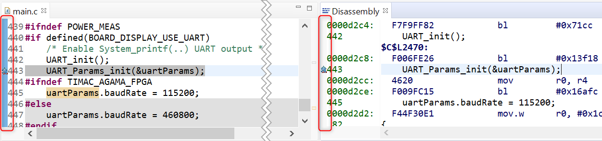Warning
In optimized code, the breakpoint may not be set to the exact line in the C source code. This is because the optimizer may condense code and impact the correlation between the assembly instruction and the C source.
7.4.7.1. Breakpoint Properties¶
Breakpoint Properties shows all details of a breakpoint (address location, related source code, type) and allows modifying the associated behaviour (actions, counter, type of event). If you have placed your cursor in the Breakpoint view window, you can right-click on a breakpoint and select Properties from the context menu to see a more detailed property list. The Breakpoint Properties are saved in the workspace, so you do not need to reset them in between debug sessions. You can modify any breakpoint property even after the breakpoint has been created.
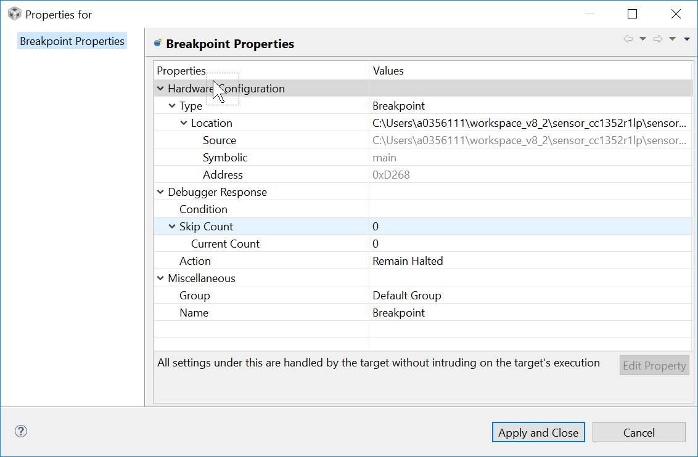In addition to simply halting the code, software breakpoints in CCS add a range of other actions such as file I/O transfers, screen updating, etc. which are accessible via the Action option of its properties.
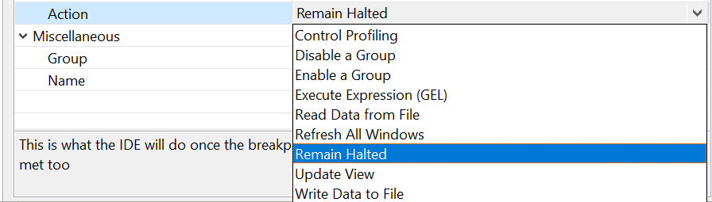Warning
The options under Debugger Response apply to software breakpoints only. They have no effect with hardware breakpoints and watchpoints.
Some of these actions open a new of parameter options immediately below the Action field. The choice of parameters will depend on the chosen action.
The main actions are:
- Halt Target: The default action when you create a breakpoint is to halt the target when triggered.
- Execute Expression (GEL): Evaluates single GEL expression. When selected, a new option field is opened and where a GEL expression may be entered.
- Update View: Updates the contents of a single view of the debug session. When selected, a new option field is opened and where a specific view can be chosen for update. After the update, target execution resumes.
- Read Data from File/Write Data to File: Performs a read/write operation from/to the host computer when the breakpoint location is reached. After the data is transferred, target execution resumes. When selected, additional fields for a filename, memory address, length, and data format will be available.
- The file is saved in either the TI .dat or .coff formats, which are described in the section Data File Formats.
Other breakpoint properties configurable are:
- Skip Count: Sets the number of passes before the breakpoint action is executed.
- Group: Allows grouping breakpoints for advanced control.
7.4.7.2. Watchpoints¶
Watchpoints are a special category of hardware breakpoints that can be triggered for a particular memory read, memory write, or both memory read or write. Watchpoints are only shown in the Breakpoints View.
Watchpoints are extremely useful to catch exceptions, invalid memory boundary accesses, overrun buffers, etc. and can be set to access any memory region, including Memory Mapped Registers (MMR).
To set a Watchpoint, simply highlight a variable on the source code editor, right click and select Breakpoint → Hardware Watchpoint. It can also be set by clicking on the small blue dot in the Breakpoints View toolbar.
7.4.7.3. Conditional Breakpoints¶
Conditional breakpoints are a special type of software breakpoint that is only triggered when a specified condition is true. It is displayed with an overlay on the breakpoint icon.
To set a condition on a breakpoint:
- Right-click on the Breakpoint that needs to be modified, either in the Breakpoints View, the Disassembly View or the Editor view.
- From the Breakpoint's context menu, select Breakpoint Properties.
- In the Properties dialog, locate the branch Debugger Response.
- In the Condition field, enter a GEL expression to be evaluated. Note that if the expression calls a GEL function, it must be defined in one of the already loaded GEL files.
- Select Apply and Close to close the dialog and commit the changes.
While the breakpoint is enabled, target execution suspends before that line of code is executed if the breakpoint condition evaluates to true.
Note
Hardware breakpoints leverage watchpoints and hence conditional watchpoints can be used instead.
7.4.7.4. Breakpoints View¶
The Breakpoints view is an integral part of the debugger that allows complete management of Breakpoints, as well as other extensions such as Watchpoints, Event Counters, among others. The Breakpoints view is not opened by default but can be viewed by going to menu View → Breakpoints.
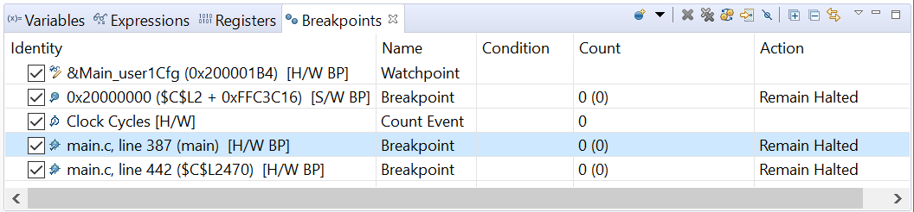The view above contains the status of all breakpoints and allows configuring their properties directly via context menu (right-click).
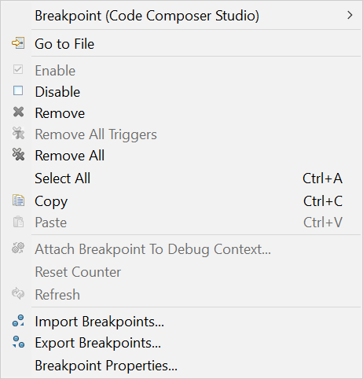- Breakpoint: Expands to a list of Breakpoints, counters, or Watchpoints.
- Go to File: Navigates to the source file where the breakpoint is located.
- Enable/Disable: Enables/disables the selected breakpoint(s). Disabling a breakpoint does not remove (delete) it, making it easy to reapply (enable) it in the future.
- Remove: Removes the highlighted breakpoint(s).
- Remove All Triggers: Disables all breakpoints visible in the view without removing them.
- Remove All: Removes all breakpoints in the view.
- Select All: Selects all breakpoints in the view.
- Copy/Paste: Copies or pastes breakpoint information to/from the clipboard.
- Import/Export Breakpoints: Import or export breakpoint information from/to a file in XML format. Very useful for complex debug sessions where multiple Breakpoints are set.
The toolbar contains various options.
- New breakpoint: Creates a new breakpoint by opening a dialog box to specify the location (address) in memory. The small arrow next to this button allows selecting from a list of Breakpoints, counters, or Watchpoints.
- Remove Selected Breakpoints: Removes the highlighted breakpoint(s).
- Remove All Breakpoints: Removes all breakpoints in the view.
- Show Breakpoints Supported by Selected Target: Shows only the breakpoints that belong to a specific Debug Context. It is useful to differentiate between breakpoints set on various cores or devices of a Debug Session.
- Go to File for Breakpoint: Navigates to the source file where the breakpoint is located.
- Skip All Breakpoints: Disables all breakpoints set on this view without removing them.
- Expand/Collapse All: Expands or collapses all breakpoints shown.
- Link with Debug View: Locks the view to the specific debug context.
- View Menu: Drop-down menu with several options to customize how the data is displayed inside the view.
- Minimize/Maximize: Minimize or maximize the view.
7.4.8. Terminal View¶
A simple Terminal view is avaiable to perform serial or networked communications from inside the CCS IDE. Details about this are available at the reference below:
7.4.9. Advanced Data Visualization¶
Advanced graph and image visualization tools are available in CCS. These tools can display arrays of data in graphical format in both time and frequency domains and accept various data types (integer, floating point, Q-values, real, complex, etc.) as well as Image Analyzer.
Check the pages below:
7.4.9.1. Cache View¶
The Cache view shows the cache configuration of the C6000 DSP core, separated by type of cache and ordered by memory address. It contains various fields displayed in a spreadsheet format.
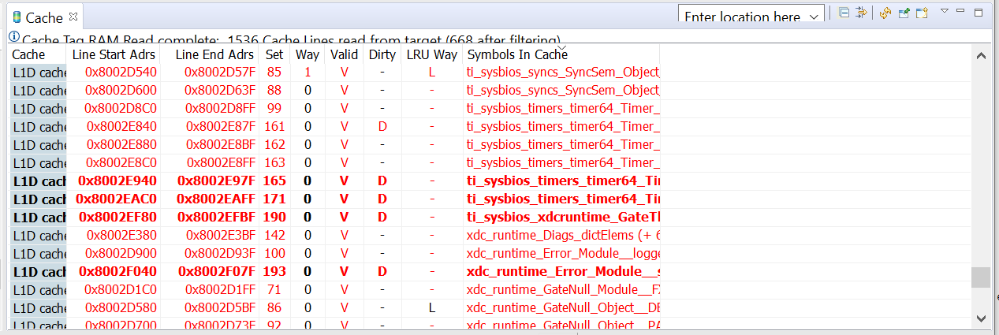The columns are:
- Cache: Type of cache being used at the row.
- Line Start/End Adrs: Initial and final addresses of the line.
- Set: ID of the cache set.
- Way: Way of the cache set. Requires the cache to operate in N-way associative mode.
- Valid: Indicates the data is valid.
- Dirty: Indicates the data is dirty.
- LRU Way: Indicates the least used way of the cache set.
- Symbols in Cache: Shows a list of the debug symbols allocated in the cache line.
Right-clicking on the Cache view shows the following options:
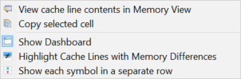- View cache line contents in Memory View: Toggles the line separator for each cache line in the Memory Browser View.
- Copy selected cell: Copies the contents of the cell to the clipboard in text format.
- Show Dashboard: Displays the cache Dashboard, resetting any other view modifiers.
- Highlight Cache Lines with Memory Differences: Sets the cache lines with differences, to a bold font for easier visualization.
- Show each symbol in a separate row: Expands the symbols shown in column Symbols in cache to display each in its own row.
The toolbar contains various options:
- Address bar: A free text field to input the desired address to be evaluated by the Cache view.
- Show cache line details: Expands the highlighted cache line to display all symbols currently allocated to it.
- Filter: Sets different view configurations for the Cache view.
- Refresh: Updates the contents of the view by loading them from the target.
- Pin to current device: When debugging devices with multiple cores, this option locks the view to the core in context.
- New cache view: Opens a new view to allow side-by-side comparison of values.
- View Menu: Drop-down menu with several options to customize how the data is displayed inside the view.
- Minimize/Maximize: Minimize or maximize the view.
7.4.10. Measuring Performance¶
The ability to measure low-level code performance by counting cycles is available through the Profile Clock tool. Details about this feature can be seen at the reference below:
7.4.11. Data File Formats¶
CCS is able to import and export data in a few file formats, including COFF, flat binary format and TI DAT.
7.4.11.1. Common Object File Format¶
The Common Object File Format or COFF for short, is a binary file format used for object code, libraries, and executables, originated on Unix systems. TI uses this file format with modifications optimal for embedded systems.
Additional details and references can be found in the TI Assembly Language Tools User's Guides or on the COFF Wikipedia page.
7.4.11.2. Binary Format¶
The Binary format has no specified header or translation. It is a simple bitstream of data with no information about symbols, address placement, or relocation. The length of the data is equal to the length of the file.
One important aspect: when creating binary files using tiobj2bin or objcopy from a project, care must be taken to place all initialized code/data in adjacent memory locations. Any holes are filled with zeros. If a file with zero-filled gaps is loaded to a device, it may trigger invalid memory access errors.
7.4.11.3. TI Raw Data Format¶
The TI Raw Data Format is identical to the Binary Format above.
7.4.11.4. TI DAT Format¶
A text file that contains one line of header information and stores the data as one sample per line.
The header information for data files uses this syntax:
| MagicNumber | Format | StartingAddress | PageNum | Length | SubFormat |
- MagicNumber: fixed at 1651.
- Format: the format type:
- 1: Hexadecimal
- 2: Integer
- 3: Long
- 4: Float
- 9: Extended types
- StartingAddress: the start address in hex
- PageNum: the memory page:
- 0: Program
- 1: Data
- 2: I/O
- Length: the number of blocks in hex
- SubFormat: The extended data type when Format is set to 9.
The Format types 1 through 4 are used by older versions of CCS and should be used only for legacy compatibility. The current versions only use format type 9 with the extended data type.
The table below shows a list of supported extended data types per target.
The list can be obtained by connecting to a device or core, then opening the Scripting Console and issuing the command eval('GEL_MemoryListSupportedTypes(0)');
| ARM Cortex 32-bit | ARM Cortex 64-bit | F28x, PRU | C66x | MSP430 | |
|---|---|---|---|---|---|
| 0 | 32-Bit Hex - TI Style | 64-Bit Hex - TI Style | 8-Bit Hex - TI Style | 64-Bit Hex - TI Style | 32-Bit Hex - C Style |
| 1 | 32-Bit Hex - C Style | 64-Bit Hex - C Style | 8-Bit Hex - C Style | 64-Bit Hex - C Style | 32-Bit Hex - TI Style |
| 2 | 32-Bit Signed Int | 64-Bit Floating Point | 8-Bit Signed Int | 64-Bit Floating Point | 32-Bit Signed Int |
| 3 | 32-Bit UnSigned Int | 64-Bit Exponential Float | 8-Bit UnSigned Int | 64-Bit Exponential Float | 32-Bit UnSigned Int |
| 4 | 32-Bit Binary | 32-Bit Hex - TI Style | 8-Bit Binary | 32-Bit Hex - TI Style | 32-Bit Binary |
| 5 | 32-Bit Floating Point | 32-Bit Hex - C Style | Character | 32-Bit Hex - C Style | 32-Bit Floating Point |
| 6 | 32-Bit Exponential Float | 32-Bit Signed Int | Packed Char | 32-Bit Signed Int | 32-Bit Exponential Float |
| 7 | 16-Bit Hex - TI Style | 32-Bit UnSigned Int | 16-Bit Hex - C Style | 32-Bit UnSigned Int | 16-Bit Hex - C Style |
| 8 | 16-Bit Hex - C Style | 32-Bit Binary | 16-Bit Hex - TI Style | 32-Bit Binary | 16-Bit Hex - TI Style |
| 9 | 16-Bit Signed Int | 32-Bit Floating Point | 16-Bit Signed Int | 32-Bit Floating Point | 16-Bit Signed Int |
| 10 | 16-Bit UnSigned Int | 32-Bit Exponential Float | 16-Bit UnSigned Int | 32-Bit Exponential Float | 16-Bit UnSigned Int |
| 11 | 16-Bit Binary | 16-Bit Hex - TI Style | 16-Bit Binary | 16-Bit Hex - TI Style | 16-Bit Binary |
| 12 | 8-Bit Hex - TI Style | 16-Bit Hex - C Style | 32-Bit Signed Int | 16-Bit Hex - C Style | 8-Bit Hex - C Style |
| 13 | 8-Bit Hex - C Style | 16-Bit Signed Int | 32-Bit UnSigned Int | 16-Bit Signed Int | 8-Bit Hex - TI Style |
| 14 | 8-Bit Signed Int | 16-Bit UnSigned Int | 32-Bit Hex - C Style | 16-Bit UnSigned Int | 8-Bit Signed Int |
| 15 | 8-Bit UnSigned Int | 16-Bit Binary | 32-Bit Hex - TI Style | 16-Bit Binary | 8-Bit UnSigned Int |
| 16 | 8-Bit Binary | 8-Bit Hex - TI Style | 32-Bit Floating Point | 8-Bit Hex - TI Style | 8-Bit Binary |
| 17 | Character | 8-Bit Hex - C Style | 32-Bit Exponential Float | 8-Bit Hex - C Style | Character |
| 18 | 64-Bit Hex - TI Style | 8-Bit Signed Int | 32-Bit IEEE Floating Point | 8-Bit Signed Int | |
| 19 | 64-Bit Hex - C Style | 8-Bit UnSigned Int | 32-Bit IEEE Exp'l Float | 8-Bit UnSigned Int | |
| 20 | 64-Bit Signed Int | 8-Bit Binary | 64-Bit Hex - C Style | 8-Bit Binary | |
| 21 | 64-Bit UnSigned Int | Character | 64-Bit Hex - TI Style | Character | |
| 22 | 64-Bit Floating Point | Packed Char | 64-Bit Floating Point | Packed Char | |
| 23 | 64-Bit Exponential Float | 64-Bit Exponential Float |
7.5. Advanced Debugging Topics¶
7.5.1. Debugging Library Code¶
When debugging the application, the target may be halted (either intentionally or unintentionally) within a routine in one of the libraries linked to the application. In such cases, the editor view will display the message Can’t find a source file at… or No source available for…. In most cases, there will also be two buttons named View Disassembly… and Locate File….
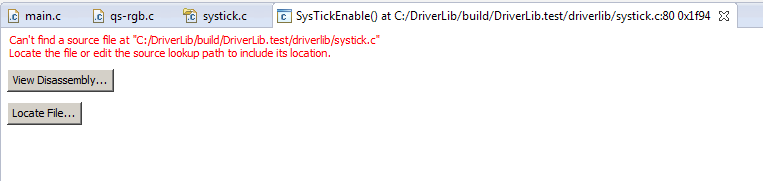The reason for the message is that the program is halted at a location where the debugger is unable to locate the corresponding source file. This is typical when halted within a library that was built outside of the current project.
This type of message can occur when halted within any library, including the C runtime library, BIOS libraries, driverlibs, or other custom libraries linked to the project.
Some situations when the message will appear:
- if the Halt button is pressed and the Program Counter is located within a library routine.
- if a breakpoint is set at a label inside a library routine and the debugger is halted at it.
- if the code is halted within a library routine for some unintended reason.
The message itself is typically harmless and can be ignored. If it is required to do source level debugging of the library code, the debugger can point to the location of the source file by clicking on Locate File… and browsing to the location where the source file resides (a directory, a mounted remote drive, etc.).
Libraries from TI such as the C runtime library, driverlib (part of SimpleLink SDKs, C2000Ware, MSPWare, TivaWare etc.) often come with the source, so these directories can be specified to the debugger.
If you do not have access to the source, you can still view and step through the disassembly code by clicking on View Disassembly….
Without the source file correlation, the debugger will also be unable to set breakpoints within a library routine from the editor view. For example, if you open a source file that is part of a library and try to set a breakpoint in it from the editor view without making the correlation between the debugger and source file, then the breakpoint will not be enabled. You can still set the breakpoint from the Breakpoints view by specifying the symbol name or associated address. Then when the program is halted at the breakpoint, you can click on the Locate File… button to tell the debugger where the source files are located. Once the association with the source is made, you should then be able to set future breakpoints from the editor view.
Besides the Locate File… button, there are a couple of other ways to tell the debugger where to look for sources that are not part of the project. Please see slides 51-55 of the CCS Tips and Tricks presentation.
7.5.2. Debugging optimized code¶
If your program is compiled with optimization enabled, that will impact the debug experience. The higher the level of optimization, the more it will degrade the ease of debugging. Please see this article about tradeoff between debug and optimization: Debug versus Optimization Tradeoff
7.5.3. Trace¶
Trace is an advanced debugging capability that allows capturing code execution and system events in real-time. It can be an invaluable tool to detect complex, intermittent bugs and to profile and fine tune code performance.
There are several types of trace available with CCS:
- Core Trace
- System Trace
- SWO Trace
- EnergyTrace
Note
The availability of each type of trace can vary depending on the device and debug probe used.
7.5.3.1. Core Trace¶
Core Trace (also referred to as "Processor", "Instruction", or "CPU" Trace) is an advanced debug feature that performs real-time gathering of all instructions being executed by the core. A timestamp is stored with each instuction. The collected trace data is then sent to CCS for further post processing and displayed in the CCS trace views. CCS can correlate the instructions with the source code and thus allows for looking the code execution more easily. The ability to see the program's execution history allows for finding places where the code behaves erratically or took an unexpected branch.
In addition, the collected trace data can be used to perform a multitude of other operations. The most commonly supported ones are:
- Code Coverage: Finding out which routines were actually executed
- Profiling: How many times and for how long each instruction and routine executed
Other operations may be supported, depending on the device and version of CCS.
Since the execution speed of modern processors can reach billions of instructions per second, it is impossible to gather all this information without special hardware and some buffering between the device and the host machine. Hence, core trace is not available in all devices. For the ones which have this feature, there are two implementations with different levels of complexity: Embedded Trace Buffer (or ETB) and Pin Trace using an external trace receiver pod.
7.5.3.1.1. Embedded Trace Buffer (ETB)¶
Embedded Trace Buffer (or ETB) is a small memory area that is tightly coupled to the processing core of the device, and contains a copy of all the instructions executed by it. Due to its small size, the ETB is only able to capture a small sample of instructions that pass through the core. It can only operates in circular mode, which means that old instructions are overriden by newer ones. The advantage for the ETB is that it allows for performing core trace without the need for any extra specialized hardware, and works with any XDS based debug probe.
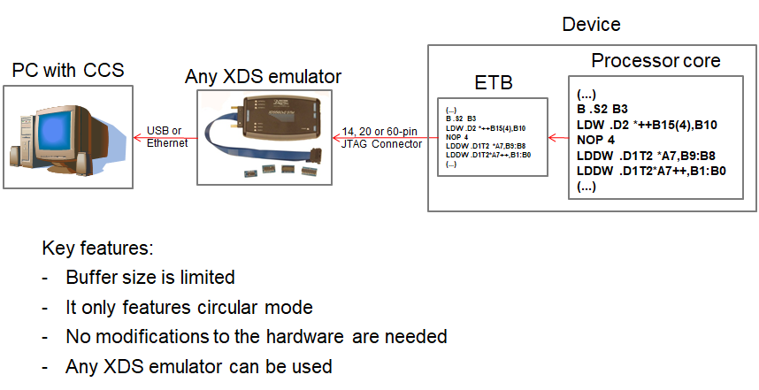The ETB is available with the following cores:
- C64x+
- C66x
- ARM9
- ARM Cortex-A
- ARM Cortex-R
7.5.3.1.2. Pin Trace¶
Pin Trace is a technology that features a trace buffer outside of the device without losing the ability to capture all instructions that are executed by the processing core. Being outside of the device, the trace buffer can have any size and allows additional configurability such as operation in both circular and one-shot mode. The one-shot mode gives an additional degree of observability as it allows retrieving the exact history of execution up to a given point of interest. However, the fact the trace buffer is outside the device adds the requirement of having a high-speed communcations interface to capture all data, thus requiring additional specialized hardware on the device and target board, and limiting the choice of XDS debug probe to the more costly XDS PRO TRACE.
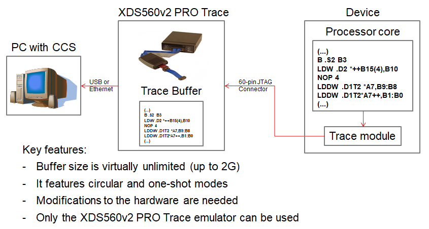Note
The availability of Pin Trace can vary depending on the device. Check the device documentation to see if Pin Trace is supported.
7.5.3.1.3. Trace Visualization Toolkit¶
The CCS Trace Visualization Toolit (or TVT) can be used to configure trace collection and visualize the collected data. Note that not all devices that support core trace is supported by TVT.
Supported devices include:
- J721E/DRA829/TDA4VM
- AM65x/DRA80x
- AM64x
- AM24x
- AWR294x
Note
For older devices, core trace functionality may be supported by the legacy Hardware Trace Analyzer tool. See the Hardware Trace Analyzer section for more details.
TVT can be accessed with the Code Analysis menu. Underneath this menu, there are three options:
- Core Trace: Collect, decode, and display core trace data
- Code Profile/Coverage: Collect and decode core trace data. Use the decoded data to generate and display profiling and code coverage information
- Open Trace File (.tdf): Open a previously saved trace data file
To collect and display Core Trace data, select the Code Analysis → Core Trace menu item. This will open the Core Trace view and allow the user to configure the trace session:
- Filters restrict the trace data that is collected while trace is turned on (see Triggers). Filters are used to Include or Exclude trace data from specific address ranges. The include/exclude setting applies to all filters. Multiple ranges can be specified using either explicit addresses or labels.
- Triggers determine when trace collection is active by turning trace on (Start) or off (Stop) when instructions at specific addresses are executed. This allows for very precise control over when trace data is collected, making sure only data of interest is collected. This is especially helpful when working with the limited buffer size of the ETB. Multiple start/stop triggers can be specified using either explicit addresses or labels. The option Trace on from start will allow you to choose the default state of trace when the trace session is started (ON/OFF).
- Receiver Settings allow for additional configuration of the trace receiver, which captures the trace data and stores it until it can be read and decoded. The Receiver drop-down menu will display all available receiver types and allow the user to select which one to use. The Buffer type provides the option to specify the trace buffer behavior - Circular to have the buffer wraparound when full, or to Stop when full to stop collection when the buffer is full (even though both the trace sesssion and the application is still running). The Trace collection field allows the user to specify the setting for the Trace synchronized with processor run/halt option. If this option is disabled, then the user will need to manually stop the trace session even if the target has halted.
After trace is configured and the OK button is selected, the trace session will start. The target can be run and trace data will be collected according to how the trace session was configured. The trace session can be halted in a variety of ways. If the Trace synchronized with processor run/halt option is enabled, then session will automatically be halted when the target execution is halted. The trace session can also be manually halted when the STOP RECORDING button is pressed while the session is running. When the trace session is halted, all data stored in the trace buffer is sent to CCS over the existing JTAG connection, processed by TVT and displayed in the Core Trace view:
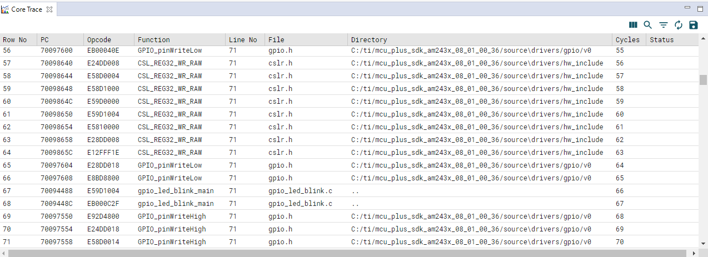The follow columns are displayed for each trace entry:
- Row No: The row number representing an entry
- PC: The recorded address of the Program Counter (PC)
- Opcode: The opcode/instruction recorded at the address
- Function: The function associated with this entry (requires loaded debug symbols)
- Line No: The source line number associated with this entry (requires loaded debug symbols)
- File: The source file name associated with this entry (requires loaded debug symbols)
- Directory: The directory for the above source file. This may be an absolute path or relative path (relative to the loaded debug symbols)
- Cycles: Cycle count associated with the entry
- Status: Diagnostic message associated with the entry (if applicable)
Selecting an entry will attempt to open the associated source file in the editor and highlight the associated source line, and also jump to that address in the Disassembly view (if open).
The toolbar for the Core Trace view provides the following options:
Select columns to display: Hide/show columns. By default, all columns are shown
Search trace table: Search specified columns for values.
Filter trace table: Filter the displayed rows based
Clear table and restart: Removes all entries and reopens the trace configuration settings
Save trace data to file: Save the current trace data to a file. There are three options to choose from:
- Trace Data File (tdf): Binary file with the raw trace data. This file can be opened and viewed by TVT with the Code Analysis → Open Trace File (.tdf) menu item
- SQLite Database (.sqlite): SQL database file
- Comma Separated File (.csv): Text file with the data separated by commas. Easily imported into common spreadsheet applications
For a short video on using TVT for Core Trace, please see: How to use CCS to capture trace data on an AM243x LaunchPad.
To collect and display Code Profile/Coverage data, select the Code Analysis → Core Profile/Coverage menu item. This will open the Code Profile/Coverage view.
- Overview: Displays a list of previously saved profile runs and allows you to create a new one
- Profile: Displays profile data for a selected profile run
- Coverage: Displays coverage data for a selected profile run
A new profile run can be created with the Add new profile/coverage run using trace button (the "+" symbol in a circle). Selecting this option opens the trace configuration settings. For more information on these settings, please see section above regarding Core Trace configuration. Note that there is one additional setting that was not previously available. It is the Comments field. It allows the user to enter a description for the profile run. This description is useful to differentiate between other previous profile runs listed in the Overview section.
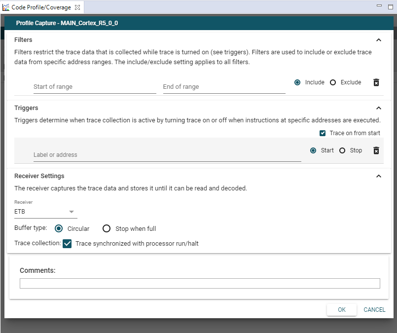After trace is configured and the OK button is selected, the trace session will start. The behavior of the trace session will be the same as described with the Core Trace session. Once the trace session has been halted, a profile run for the session will appear in the Overview section.
Information such as the Executable name, Directory of the executable, time Last Modified, the Checksum value, time the trace data was Collected On, and the Comments for each profile run is displayed. Pressing the settings button (first "gear" icon just to the right of the Comments) will display any custom options made in the trace configuration settings for the profile run. In the example below, several custom trace triggers were set:
The delete button ("trash" icon next to the settings icon) will delete the record for that profile run.
When a profile run is selected by checking the checkbox for the profile run (to the left of the Executable name), The Profile and Coverage sections will display the relevant information for that profile run.
The Profile section can display profiling data at the source file, function, and source line level.
For each source file, the following information is displayed:
- File name: The source file this entry represents
- Instructions Executed: The number of assembly instuctions executed for this entry
- of Total: The percentage of total cycles (of the entire profile run) associated with this entry
- Cycles: Number of cycles associated with this source file
- Cycles per Inst: The average number of cycles per instructions executed for this entry
- Cycles: Visual bar graph representation of percentage of total cycles associated for this entry
A source File Name can be selected to show the function level profiling data for that source file. The information shown is the same as what is shown at the file level, with the only difference being that it is on a per function level.
A Function Name can be selected to show the source line level profiling data for that function. The information shown is similar to what is shown at the file/function level, with the exception of three additional columns:
- Line No: The source line this entry represents
- Start Address: The start address for this entry
- Executed: The number of times this entry (source line) was executed
Note
Some entries may repeat the same Line No, hence breaking up the total data for that source line into multiple entries. This is due to the way the trace data is categorized.
Selecting an entry at the source line level will attempt to open the associated source file in the editor and highlight the associated source line, and also jump to that address in the Disassembly view (if open).
The Coverage section can display code coverage data at the source file, function, and source line level.
For each source file, the following information is displayed:
- File name: The source file this entry represents
- Coverage: The percentage of coverage for all source lines in functions that were called
- Visual bar graph representation of the percentage of coverage for all source lines in functions that were called. A green color indicates that the coverage was 100%.
A source File Name can be selected to show the function level coverage data for that source file. The information shown is the same as what is shown at the file level, with the only difference being that it is on a per function level.
A Function Name can be selected to show the source line level coverage data for that function. The information shown is similar to what is shown at the file/function level, with the exception of three additional columns:
- Line No: The source line this entry represents
- Start Address: The start address for this entry
- Coverage: The percentage of coverage for all instructions associated with the source line for this entry
In the screenshot above, the gpio_led_blink.c file only has 5.63% coverage for the functions that were called within it. Expanding the file shows the gpio_led_blink_main function, which again shows 5.63% coverage. Expanding the function shows only lines 66 and 68 of the function have coverage. The reason for this is because this profile run was configured with various triggers to turn on/off trace at various addresses (as shown earlier). This explains why there is trace data for only a fraction of this function.
For a short video on using TVT for Code Profiling/Coverage, please see: How to use CCS to capture code profiling and coverage data on an AM243x LaunchPad.
7.5.3.1.4. Hardware Trace Analyzer¶
For older devices that are not supported by TVT, core trace functionality may be available using the legacy Hardware Trace Analyzer tool. Please refer to the Trace Analyzer User’s Guide for more information.
7.5.3.2. System Trace¶
System Trace is trace capability that monitors synchronization and timing between cores and on-chip peripherals. It provides system level visibility to software thread execution and hardware performance. Essentially, it is type of trace that monitors the entire device and not just the core processor. Please refer to the Trace Analyzer User’s Guide for more information.
7.5.3.3. SWO Trace¶
SWO Trace is a single pin trace interface that is part of the Cortex M Coresight components. It supports profiling of hardware events such as periodic sampling of program counter, data variable reads and writes, interrupt entry and exit, counters, as well as application generated software messages. It is also fully integrated into CCS and supported on various Cortex M devices.
See the below article for more information on SWO Trace:
7.5.3.4. EnergyTrace¶
EnergyTrace™ technology is a power analyzer tool for CCS that measures and displays the energy profile of an application and helps optimize it for ultra-low-power consumption. The tool can be used standalone as a power profiling tool, or in EnergyTrace+ or EnergyTrace++ modes within a debug session for code analysis to help optimize the application for ultra-low-power consumption.
See the below article for more information on EnergyTrace:
7.5.3.5. MTB Trace¶
MTB Trace provides a single execution trace capability for MSPM0+ devices - recording any PC discontinuities. It is similar to Core Trace, though much more limited in scope. The MTB uses SRAM to store the data and it is configured to store four entries.
To collect and display MTB Trace data, select the Code Analysis → MTB Trace menu item. This will open the MTB Trace view and allow the user to configure the Receiver settings for the trace session. The trace receiver captures the trace data and stores it until it can be read and decoded.
The following options are available for the Receiver settings:
Buffer mode: Provides the option to specify the trace buffer behavior - Circular to have the buffer wraparound when full, or to Stop when full to stop collection when the buffer is full. If the Stop when full option is enabled, an addition option Halt on buffer full will be available. Enabling this option will have the debugger halt the target when the trace buffer is full (as opposed to leaving the target running).
Synchronize with processor: This option allows the user to specify if the trace collection should automatically halt if the target is halted. If this option is disabled, then the user will need to manually stop the trace session even if the target has halted.
Warning
It is strongly recommend to set the Buffer mode to Circular due to the very small trace buffer size.
After trace is configured and the OK button is selected, the trace session will start. The target can be run and trace data will be collected according to how the trace session was configured. The trace session can be halted in a variety of ways. If the Synchronize with processor option is enabled, then session will automatically be halted when the target execution is halted. The trace session can also be manually halted when the STOP RECORDING button is pressed while the session is running. When the trace session is halted, all data stored in the trace buffer is sent to CCS over the existing JTAG connection, processed by TVT and displayed in the MTB Trace view:

The follow columns are displayed for each trace entry:
#: The row number representing an entry
Start: The start address of the Program Counter (PC) for the entry
End: The end address of the Program Counter (PC) for the entry
Function: The function associated with this entry (requires loaded debug symbols)
File: The source file name associated with this entry (requires loaded debug symbols)
Expand: Enabling the checkbox for an entry will display all the assembly instructions associated for that entry
- Address: The address of the Program Counter (PC)
- Assembly Code: The opcode/instruction recorded at the address
- Source Line: The source line number associated with this address (requires loaded debug symbols)
- Source Code: The source code associated with this address (requires loaded debug symbols)
Selecting an entry will attempt to open the associated source file in the editor and highlight the associated source line, and also jump to that address in the Disassembly view (if open).
The toolbar for the MTB Trace view only has one button:
- Clear table and restart: This button will clear all entries and allow the user to configure the Receiver setting again to start a new trace session
See the below article for more information on the MTB itself:
7.5.4. Multi-core Debug¶
CCS has advanced functionality to support Multi-core debugging, including the ability to control multiple cores and devices either in symmetric or assymmetric fashion. Details are covered in the articles below:
7.5.5. Configuring Flash Settings¶
CCS comes with an integrated On-Chip Flash Programmer. When a project is configured to use Flash memory regions of the device, the debugger automatically programs the Flash memory for those sections.
Note
Only devices with internal memory are automatically programmed with the built-in flash programmer. External Flash IC devices (I2C, SPI, parallel NAND/NOR) must use a custom method to be programmed.
The flash memory related settings and operations can be accessed in a few ways:
- From the CCS Debug perspective, go to menu Tools → On-Chip Flash.
- From the CCS Edit perspective, right click on the project and select Project Properties → Debug → Flash Settings. This assumes a project is being used and debugged.
- Certain operations such as erase, protect, program can only be performed after connecting to the device.
To connect to the device prior to or even without loading a program, see the section Manual Launch.
A summary of options per device variant is shown in the next sections, but consult the device documentation for additional information.
7.5.5.1. CC32xx (Cortex M4)¶
The following settings/operations are supported for CC32xx devices:
Flash Settings:
- Crystal frequency: Sets the crystal frequency required by the Flash algorithm. It needs to match the target board hardware and is set to a default value that matches common development kits.
- Reset target during program load to Flash memory: Enables/disables the system reset signal before the Flash is programmed.
Program Load - Erase Method: Sets the erase method when programming the device.
- Necessary Pages Only: Erase only the Flash regions to which the linker has allocated storage.
- Use the Erase Options Specified Below: Enables the options under the Erase section below.
- Do Not Erase Flash Memory: Do not erase anything.
Erase: Manually erase the device's Flash memory.
- Entire Flash: Erases the entire Flash.
- By Address Range: Specify the start and end address of flash to erase.
Enable Verbose Output: Sets verbose mode output to the Console View.
7.5.5.2. CC13xx/CC26xx (Cortex M3/M4)¶
The following settings/operations are supported for CC13xx and CC26xx devices:
Program Load Settings: Sets the erase method, and gives the option to perform blank check and calculate CRC32 on flash memory immediately after the operation.
- All Unprotected Sectors: Erases all regions that is not previously set as protected.
- Necessary Sectors Only: will erase only the flash regions to which the linker has allocated storage.
- Necessary Sectors Only (Retain untouched content within sector): Performs a higher level of granularity for differential Flash programming. This can be used to load multiple executable files that reside in different sectors of memory.
- Specific Sectors: Allows erasing only specific sectors using the Sectors option below.
- Do not erase sectors (program load only): Performs the Flash programming only. Helps speed up the process for knowingly blank devices but can cause issues with pre-flashed devices.
- Use CRC Verification during program load: Performs a CRC calculation and verification of the entire Flash contents.
- Perform Blank Check: Performs a verification if the entire Flash is blank.
Skip Sectors during Program Load: Allows specifying sectors that remain untouched during the Flash erase/program/verification. It can exclude sections based on its previous contents as well.
Customer Configuration (CCFG): Allows for setting various additional device configurations: - Keep CCFG data: Retains the upper N bytes of the device's CCFG. Consult the device's documentation for additional details. - Disable Bootloader: Disables the built-in device's bootloader - Lock debug interface: Prevents access to the debug interface after programming. This is not reversible and should not be used during the debug phase. - Write-protect sectors: Prevents overwriting of specific sectors using the Sectors option below.
Erase Actions: Manually erase the device's Flash memory. - Erase entire flash: Erases the entire Flash. The device must be reconnected after this operation. - Erase specific flash sectors: Erases the sectors specified by the Sectors option below. - The Flash can be manually erased by clicking on the Erase Flash button.
Device Information: When connected, allows gathering information about the connected device.
Device MAC Addresses: When connected, allows reading and setting the Primary BLE, Secondary BLE, Primary IEEE and Secondary IEEE addresses. Consult the device's documentation for additional details.
Enable Verbose Output: Sets verbose mode output to the Console View
7.5.5.3. MSP432 (Cortex M4)¶
The following settings/operations are supported for MSP432 devices:
Program Load Settings: Sets the erase method and gives the option to perform blank check and calculate CRC32 on flash memory immediately after the operation.
- Necessary Pages Only: Erase only the flash regions to which the linker has allocated storage.
- Use the Erase Options Specified Below: Enables the options under the Erase section below.
- Do Not Erase Flash Memory: Do not erase anything.
Erase Configuration: Specifies the various memory types to be erased during Flash programming.
Erase main memory only: Erases only the main memory.
Erase main and information memory: Erases both memory segments.
Factory Reset: Restores all the memory and user registers to default settings.
Erase and download necessary segmnents only (Differential Download): Keeps track of the executable previously loaded, performs a comparison between the two, determines the incremental changes, and downloads only the modified memory sections. This is particularly useful for development stages where only minor changes are being performed on a large executable.
Warning
This option should NOT be used to load two different programs (such as a bootloader program and application program), as it might erase the first program when loading the second program, and it will also slow down programming as it will try to compare two totally separate programs unnecessarily.
Replace written memory locations, retain unwritten memory locations: Can be used to load multiple executable files that reside in different sections of memory.
- If there is a section that overlaps (such as vector table), the last executable to be downloaded is the one whose vector table needs to be retained, hence the correct one is preserved on the target device.
By Address Range (specify below): Specify the start and end address of flash to erase.
Allow BSL information memory erase: Allows access to the BSL memory region. This is used to create custom BSL code.
Perform CRC verification: Performs a CRC calculation of the entire Flash contents.
Perform Blank Check: Performs a verification if the entire Flash is blank.
Device Security Configuration: Locks the device permanently or a single time.
Enable Verbose Output: Sets verbose mode output to the Console View
7.5.5.4. TM4C (Cortex M4)¶
The following settings/operations are supported for TM4C devices:
Flash Settings:
- Crystal frequency: Sets the crystal frequency required by the Flash algorithm. It needs to match the target board hardware and is set to a default value that matches common development kits.
- Reset target during program load to Flash memory: Enables/disables the system reset signal before the Flash is programmed.
Program Load Settings: Sets the erase method and gives the option to perform blank check and calculate CRC32 on flash memory immediately after the operation.
- Necessary Pages Only: Erase only the flash regions to which the linker has allocated storage.
- Use the Erase Options Specified Below: Enables the options under the Erase section below.
- Do Not Erase Flash Memory: Do not erase anything.
Erase: Specifies the various memory ranges to be erased during Flash programming.
- Entire Flash: Erases everything.
- By Address Range: Specify the start and end address of flash to erase.
Blank Check: Performs a verification if the Flash is blank. Defaults to the entire flash but can be set for a specified address range.
CRC32: Performs a CRC32 calculation on the Flash contents. Defaults to perform this on the entire flash but can be set for a specified address range.
User Register Programming: Allows direct programming of the non-volatile User registers (USER_REG0 and USER_REG1).
MAC Address Mode: Programs the User registers above in the format of an Ethernet MAC address.
Debug Port Unlock: Allows the JTAG/SWD debug pins to be unlocked if you configure the pins as GPIOs or there is some other issue that causes the device to lock up, such as configuring the system clock out of specification.
ICDI Firmware Update: Can be used to update the ICDI firmware for boards that use a TM4C123-based ICDI Debug Probe. For the last three settings, refer to the LMFlash Programmer Help for more information.
Device Information: When connected, allows gathering information about the connected device.
Enable Verbose Output: Aets verbose mode output to the Console View.
7.5.5.5. F28x¶
The following settings/operations are supported for F28x devices:
Clock/PLL Settings: These options are critical to configure the device's System Frequency for Flash operations.
- These fields are not modifiable when using a Piccolo device, as the clock control is entirely based on the device’s on-chip oscillator.
Download Settings: These options control the actions to be executed.
- Erase and Program: Performs the Erase followed by Flash programming of the device. This is the safer method to program the devices.
- Program Only: Performs the Flash programming only. Helps speed up the process for knowingly blank devices but can have problems with pre-flashed devices.
- Verify Only: Performs a sanity check on the data flashed to the device.
- Perform Blank Check before loading data to Flash memory: Performs a blank verification before start programming the Flash.
- Verify Flash after Program: Performs a sanity check on the data written to the target device.
- Auto ECC Generation: Enables the generation of Error Correcting Code of the data flashed to the device.
Range Avoidance Settings: Allows specifying ranges that are left untouched by the Flash programmer.
Performance Settings: Enables faster Flash programming by combining memory sections. The use of this option has several tradeoffs shown in the dialog box. Consult the device's documentation for additional details.
Erase Settings: Specifies the various memory ranges to be erased during Flash programming.
- Entire Flash: Erases everything.
- Necessary Sections Only: Erase only the Flash regions to which the linker has allocated storage.
- Selected Sectors Only: Specifies the Flash Banks and Sectors to erase. The Flash can be manually erased by clicking on the button Erase Flash.
- The Flash can be manually erased by clicking on the Erase Flash button.
Blank Check Settings: Performs a verification if the Flash is blank.
- Checksum: Shows the checksup results for the various memory types.
- Click on the Calculate Checksum button to perform the calculations.
Security Settings: Used to program the code security password and other security settings for the various peripherals and memory.
Enable Verbose Output: Sets verbose mode output to the Console View.
Backup RAM during Flash Programming/Operations: Creates a backup copy of the RAM contents during Flash operations.
7.5.5.6. MSP430¶
The following settings/operations are supported for MSP430 devices:
Target Voltage (mV): Sets the voltage used by the target device.
Download Options: Sets options specific to certain devices.
- Copy application to external SPI memory after program load: Copies the application to external SPI memory. This is used by the Loader ROM code in certain devices.
- Allow Read/Write/Erase access to BSL memory: Allows access to the BSL memory region. This is used to create custom BSL code.
Flash Settings
- Crystal frequency: Sets the crystal frequency required by the Flash algorithm. It needs to match the target board hardware and is set to a default value that matches common development kits.
- Reset target during program load to Flash memory: Enables/disables the system reset signal before the Flash is programmed.
Program Load Settings: Sets the erase method and gives the option to perform blank check and calculate CRC32 on flash memory immediately after the operation.
- Necessary Pages Only: Erase only the flash regions to which the linker has allocated storage.
- Use the Erase Options Specified Below: Enables the options under the Erase section below.
- Do Not Erase Flash Memory: Do not erase anything.
Erase Options: Specifies the various memory types to be erased during Flash programming.
Erase main memory only: Erases only the main memory.
Erase main and information memory: Erases both memory segments.
Erase main, information and protected information memory: Erases the entire memory of the device.
Erase and download necessary segmnents only (Differential Download): Keeps track of the executable previously loaded, performs a comparison between the two, determines the incremental changes and downloads only the modified memory sections. This is particularly useful for development stages where only minor changes are being performed on a large executable.
Warning
This option should NOT be used to load two different programs (such as a bootloader program and application program), as it might erase the first program when loading the second program, and it will also slow down programming as it will try to compare two totally separate programs unnecessarily.
- Replace written memory locations, retain unwritten memory locations: Performs a higher level of granularity for differential Flash programming. This can be used to load multiple executable files that reside in different sections of memory.
- If there is a section that overlaps (such as vector table), the last executable to be downloaded is the one whose vector table needs to be retained, so the correct one is preserved on the target device.
By Address Range (specify below): Specifies the start and end address of flash to erase.
Erase Settings: Sets the Start Address and the End Address when the option By Address Range above is selected.
Device Information: When connected, allows gathering information about the connected device.
Enable Verbose Output: Sets verbose mode output to the Console View
7.5.5.7. Hercules (Cortex R)¶
The following settings/operations are supported for Hercules devices:
Flash Settings:
- OSCIN Frequency (MHz) Sets the crystal frequency required by the Flash algorithm. It needs to match the target board hardware and is set to a default value that matches common development kits.
- Enable Programming to OTP Memory: Enables the writing to the OTP memory region of the device. Avoid enabling this option during the debug phase.
- Auto ECC Generation: Enables the generation of Error Correcting Code of the data flashed to the device.
- Align program segments to 64-bit memory regions (for ECC calculation): Forces the alignment to 64-bit boundary so the ECC calculation can be accurate.
- System Reset on Connect: Enables/disables the system reset signal before the device is connected.
Flash verification settings:
- Verify Only: Performs a sanity check on the data flashed to the device.
- Fast Verify: Performs the Erase followed by Flash programming of the device. This is the safer method to program the devices.
- None: Performs the Flash programming only. Helps speed up the process for knowingly blank devices but can have problems with pre-flashed devices.
Program Load Settings: Sets the erase method and gives the option to perform blank check and calculate CRC32 on flash memory immediately after the operation.
- Necessary Pages Only: Erase only the flash regions to which the linker has allocated storage.
- Use the Erase Options Specified Below: Enables the options under the Erase section below.
- Do Not Erase Flash Memory: Do not erase anything.
Blank Check Options: Performs a verification if the Flash is blank. Can be manually done via the Blank Check button or enable an automatic verification before the program is Flashed.
Erase Options: Specifies the various memory ranges to be erased during Flash programming.
- Entire Flash: Erases everything.
- Necessary Sections Only (for Program Load): Erase only the Flash regions to which the linker has allocated storage.
- Selected Sectors Only: Specifies the Flash Banks and Sectors to erase.
- The Flash can be manually erased by clicking on the Erase Flash button.
Flash Profiling: Sllows performing a complete profile of code previously loaded to the Flash and track for possible errors or inconsistencies when compared to a correct executable. It can also be useful to validate different Flash programming tools apart from CCS. Consult the device's documentation for additional details.
Enable Verbose Output: Sets verbose mode output to the Console View.
7.5.6. Connecting to Secondary Cores of SoC devices¶
Most of the devices have a single core. However, in SoC devices usually one of the cores is the primary (usually an ARM) and controls one or more additional (secondary) cores. In these cases, it is impossible to load and debug code in the secondary cores without previous intervention from the primary core, which is not only responsible for releasing the secondary cores from reset, but can also initialize PLLs and external memory interfaces (EMIF).
- First make sure the Target Configuration File contains the proper GEL files - either by selecting a Board or manually adding them to the Device using the Advanced Target Configuration Options.
- Manually launch the Debugger and connect to the primary core of the device.
- After that, the menu Scripts will have a number of options to connect to the secondary cores. These options can vary greatly depending on the device, but some examples are:
- For OMAPL138 the menu is shown as DSP Wakeup
- For AM3359 the menu is shown as PRU_ICSS → PRU_ICSS_Init
- Several devices such as AM57xx, AM65xx already release the secondary cores from reset when connecting to the primary core.
- On the Debug View, right-click on the secondary core and select Connect Target.
- Optionally code can be loaded to the core by going to menu Run → Load... → Load Program...
7.5.7. Core Status¶
The status of the cores of the SoC can be inspected using the Target Status view.
- Once the Debugger is launched, go to the Debug View, right click on it and select Show All Cores
- Expand the tree under Non Debuggable Devices, select the first core (the one which ends with IcePick_C or IcePick_D) and connect to it (Ctrl+Alt+C or menu Run → Connect Target)
- Go to menu View → Other and type Target Status on the Type filter text box.
- Select the Target Status and click OK.
- The Target Status view will be shown. Expand the selections and check the status of all the cores of your device.
- The processor cores will be shown under a tree of non-debuggable cores (mostly named CS_DAP_xx). These non-debuggable cores must be connected to expose the status of the processor core.
- A core that is ready to be connected will be shown as Clk On, Power On, CLK Down inactive, Power Down inactive, Not In Reset, Reset (None)
- A core that is not ready to be connected will be shown as Clk Off, Power Off, CLK Down inactive, Power Down inactive, In Reset, Reset (None)
- A core that is deliberately powered down will be shown as Clk Off, Power Off, CLK Down active, Power Down active, In Reset, Reset (None)
7.5.8. Real-time Mode¶
Real-time mode is a special feature of selected devices and configurable via the CCS debugger that allows developers to halt and examine the program and its memory without blocking the service of any critical pre-configured interrupts.
The devices that support official Real-time mode are all TI C55x, C64x, C674x, C66x and F28x devices through a built-in module called ICEMaker. ARM Cortex based devices support do not support full real-time mode. But they do support real-time (non-intrusive) memory accesses.
- Presentation: Introduction to Real-Time Debug.
Real-time mode is mostly used by F28x developers operating with high power systems, thus usage references for this device family can be seen at the following topics:
7.5.9. Advanced Debug Probe Configurations¶
The Advanced tab of the Target Configuration Editor has a set of common configurations and a few items specific to each Debug Probe. Below follows a short list of the configurations present for each model and variant.
7.5.9.1. XDS110¶
Board Data File: CCS requires a small text file to properly characterize the Debug Probe an board or device attached to it. This option controls the generation of this file. Leave it in auto generate unless in very special circumstances.
Debug Probe Selection: Informs CCS if there are one or more Debug Probes tied to the host. it features the options One one XDS110 installed or Select by serial number.
- The option Select by serial number opens the extra option Enter the serial number to allow typing the serial number of the Debug Probe to be used.
Power Selection: Configures the type of power method applied to the target: Target supplied power or Probe supplied power (EnergyTrace).
- The option Probe supplied power opens the extra option Enter voltage: with a form to input the voltage supplied by the XDS110 to the target.
Power isolation: Sets the behaviour of the XDS110 probe after the CCS debug session disconnects from the target device/board: Remove power at final disconnect or Keep power at final disconnect. For additional details, check the section 3.1.2.2 of the <em>Addendum and errata to XDS110 Users Guide</em> at the - XDS110 page
JTAG TCLK Frequency (MHz): Sets the JTAG TCLK frequency between Fixed default 8.5MHz frequency, Fixed with user specified value or Fixed with user selected faster value.
- The two last selections open an extra option to either type the desired frequency or select among three pre-selected options.
JTAG / SWD / cJTAG Mode: Configures the type of signaling to be used: 4-pin JTAG (IEEE1149.1), SWD modes with either Auxiliary UART or SWO Trace enabled, 4-pin cJTAG (IEEE1149.7) and 2-pin cJTAG (IEEE1149.7). Consult the device's Technical Reference Manual for the modes supported by the device being used.
The 2-pin cJTAG option opens two extra options:
- Target Scan Format, which configures the mode of operation of the cJTAG module
- Auxiliary COM Por Connection, which enables either the UART communications port or SWO Trace.
7.5.9.2. XDS200¶
Board Data File: CCS requires a small text file to properly characterize the Debug Probe an board or device attached to it. This option controls the generation of this file. Leave it in auto generate unless in very special circumstances.
Debug Probe I/O Port Number: Configures which Debug Probe tied to the host has to be used. Each I/O port is dynamically allocated and is set by the order of which Debug Probe was plugged to the host.
- The option User Defined Port Number opens the extra option Enter a User Defined Port Number to allow typing port numbers greater than 3.
The JTAG nTRST Boot-Mode: Sets the status of the EMU0 and EMU1 pins to allow special Boundary scan modes to be sampled at the switch of the TRST signal. Consult the device's Technical Reference Manual for the modes supported by the device being used.
The Power On-Reset Boot-Mode: Sets the status of the EMU0 and EMU1 pins to allow special device boot modes to be sampled at power up. Read the device's Technical Reference Manual for details.
JTAG TCLK Frequency (MHz): Sets the JTAG TCLK frequency between Fixed with user specified faster value, Adaptive with user specified limit.
- The option Enter a value is always enabled to allow typing the desired frequency.
The JTAG Signals Isolation Upon Disconnect: Sets the behaviour of the Debug Probe after the CCS debug session disconnects from the target device/board: Do not isolate JTAG signals when last client disconnects or Isolate JTAG signals when last client disconnects.
Apply nRESET/SRST pin on the debug header: Configures the behaviour of the nRESET pin to be asserted at the beginning of every debug session.
JTAG / SWD / cJTAG Mode: Configures the type of signaling to be used: 4-pin JTAG (IEEE1149.1), SWD modes with either Auxiliary UART or SWO Trace enabled, 4-pin cJTAG (IEEE1149.7) and 2-pin cJTAG (IEEE1149.7). Consult the device's Technical Reference Manual for the modes supported by the device being used.
The 4-pin cJTAG option opens two extra options:
- The Converter 1149.7 Frequency Source: Adjusts the clock source and type for the cJTAG operation.
- The Target Pin Width: Adjusts the bus width of the target hardware.
The 2-pin cJTAG option opens four extra options:
- Target Scan Format: Configures the mode of operation of the cJTAG module.
- The Target Pin Width: Adjusts the bus width of the target hardware.
- User COM Por Connection, which enables either the UART communications port or the standard TDO data pin.
7.5.9.3. XDS560v2¶
Board Data File: CCS requires a small text file to properly characterize the Debug Probe an board or device attached to it. This option controls the generation of this file. Leave it in auto generate unless in very special circumstances.
Emulator I/O Port Number: Configures which Debug Probe tied to the host has to be used. Each I/O port is dynamically allocated and is set by the order of which Debug Probe was plugged to the host.
- The option User Defined Port Number opens the extra option Enter a User Defined Port Number to allow typing port numbers greater than 3.
JTAG TCLK Frequency (MHz): sets the JTAG TCLK frequency between:
- Automatic with faster 35.0MHz limit: The debug probe performs a signal integrity test until it reaches the highest speed up to 35.0MHz.
- Automatic with legacy 10.368MHz limit: The debug probe performs a signal integrity test until it reaches the highest speed up to 10.368MHz. It can help connecting to boards in noisier environments.
- Automatic with user specified limit: The debug probe performs a signal integrity test until it reaches the highest speed up to the user-defined value passed to the option Enter a value.
- Adaptive with user specified limit: The debug probe performs a signal integrity test until it reaches the highest speed up to the user-defined value passed to the option Enter a value.
- Adaptive without any limit at all: The debug probe performs a signal integrity test until it reaches the highest speed possible.
- Fixed with user specified faster value: The debug probe attempts to connect at the speed defined by the user-defined value passed to the option Enter a value. If the connection is unreliable, it reduces the TCLK speed to get a reliable connection.
- Fixed with user specified slower value: The debug probe attempts to connect at the speed defined by the user-defined value passed to the option Enter a value. If the connection is unreliable, it increases the TCLK speed to get a reliable connection.
- TCLK looped-back with user specified limit: The debug probe shorts TCK and RTCK internally to allow connecting to targets that do not have this connection provisioned.
TMS/TDO Output Timing: Adjusts the operation mode of the TMS signal to allow for a faster but less compatible operation mode.
The JTAG nTRST Boot-Mode: Sets the status of the EMU0 and EMU1 pins to allow special Boundary scan modes to be sampled at the switch of the TRST signal. Consult the device's Technical Reference Manual for the modes supported by the device being used.
The Power On-Reset Boot-Mode: Sets the status of the EMU0 and EMU1 pins to allow special device boot modes to be sampled at power up. Read the device's Technical Reference Manual for details.
The Boot-Mode Pin Map: Sets the functions of each EMU0 and EMU1 pins, giving limited GPIO control over these pins to set modes and hardware features (if the target board is routed to do so).
The JTAG Signals Isolation Upon Disconnect: Sets the behaviour of the Debug Probe after the CCS debug session disconnects from the target device/board: Do not isolate JTAG signals when last client disconnects or Isolate JTAG signals when last client disconnects.
The cJTAG Converter Features: Configures the type of signaling to be used: 4-pin JTAG (IEEE1149.1), 4-pin cJTAG (IEEE1149.7) or 2-pin cJTAG (IEEE1149.7). Consult the device's Technical Reference Manual for the modes supported by the device being used.
The 4-pin cJTAG option opens two extra options:
- The Converter 1149.7 Frequency Source: Adjusts the clock source and type for the cJTAG operation.
- The Target Pin Width: Adjusts the bus width of the target hardware.
The 2-pin cJTAG option opens four extra options:
- The Converter 1149.7 Frequency Source: Adjusts the clock source.
- The Converter 1149.7 Frequency Value: Adjusts the clock frequency.
- The Target Pin Width: Adjusts the bus width of the target hardware.
Target Scan Format: Configures the mode of operation of the cJTAG module.
7.5.9.4. XDS 560v2 ProTrace¶
Board Data File: CCS requires a small text file to properly characterize the Debug Probe an board or device attached to it. This option controls the generation of this file. Leave it in auto generate unless in very special circumstances.
Emulator I/O Port Number: Configures which Debug Probe tied to the host has to be used. Each I/O port is dynamically allocated and is set by the order of which Debug Probe was plugged to the host.
- The option User Defined Port Number opens the extra option Enter a User Defined Port Number to allow typing port numbers greater than 3.
JTAG TCLK Frequency (MHz): Sets the JTAG TCLK frequency between Adaptive, Fixed with specified value or TCLK looped-back with user specified limit.
- The last two selections enable the option Choose a value, which allows selecting between Slow, Typical and Fast (maximum of 6.5MHz)
TMS/TDO Output Timing: Adjusts the operation mode of the TMS signal to allow for a faster but less compatible operation mode.
The JTAG nTRST Boot-Mode: Sets the status of the EMU0 and EMU1 pins to allow special Boundary scan modes to be sampled at the switch of the TRST signal. Consult the device's Technical Reference Manual for the modes supported by the device being used.
The Power On-Reset Boot-Mode: Sets the status of the EMU0 and EMU1 pins to allow special device boot modes to be sampled at power up. Read the device's Technical Reference Manual for details.
The Boot-Mode Pin Map: Sets the functions of each EMU0 and EMU1 pins, giving limited GPIO control over these pins to set modes and hardware features (if the target board is routed to do so).
The JTAG Signals Isolation Upon Disconnect: Sets the behaviour of the Debug Probe after the CCS debug session disconnects from the target device/board: Do not isolate JTAG signals when last client disconnects or Isolate JTAG signals when last client disconnects.
The cJTAG Converter Features: Configures the type of signaling to be used: 4-pin JTAG (IEEE1149.1), 4-pin cJTAG (IEEE1149.7) or 2-pin cJTAG (IEEE1149.7). Consult the device's Technical Reference Manual for the modes supported by the device being used.
The 4-pin cJTAG option opens two extra options:
- The Converter 1149.7 Frequency Source: Adjusts the clock source and type for the cJTAG operation.
- The Target Pin Width: Adjusts the bus width of the target hardware.
The 2-pin cJTAG option opens four extra options:
- The Converter 1149.7 Frequency Source: Adjusts the clock source.
- The Converter 1149.7 Frequency Value: Adjusts the clock frequency.
- The Target Pin Width: Adjusts the bus width of the target hardware.
Target Scan Format: Configures the mode of operation of the cJTAG module.
7.5.9.5. XDS100v2 and XDS100v3¶
Board Data File: CCS requires a small text file to properly characterize the Debug Probe an board or device attached to it. This option controls the generation of this file. Leave it in auto generate unless in very special circumstances.
Debug Probe Selection: Informs CCS if there are one or more Debug Probes tied to the host. it features the options One one XDS100 installed or Select by serial number.
- The option Select by serial number opens the extra option Enter the serial number to allow typing the serial number of the Debug Probe to be used.
The JTAG nTRST Boot-Mode: Sets the status of the EMU0 and EMU1 pins to allow special Boundary scan modes to be sampled at the switch of the TRST signal. Consult the device's Technical Reference Manual for the modes supported by the device being used.
The Power On-Reset Boot-Mode: Sets the status of the EMU0 and EMU1 pins to allow special device boot modes to be sampled at power up. Read the device's Technical Reference Manual for details.
JTAG TCLK Frequency (MHz): Sets the JTAG TCLK frequency between:
- Fixed default 1.0MHz frequency: Connects at the fixed frequency of 1.0MHz.
- Adaptive with user specified limit: Connects using Adaptive clock using the user-defined TCLK value passed to the option Enter a value.
- Fixed with user specified faster value: The debug probe attempts to connect at the speed defined by the user-defined value passed to the option Enter a value. If the connection is unreliable, it reduces the TCLK speed within a narrow range to get a reliable connection.
- Fixed with user specified slower value: The debug probe attempts to connect at the speed defined by the user-defined value passed to the option Enter a value. If the connection is unreliable, it increases the TCLK speed within a narrow range to get a reliable connection.
The XDS100v3 adds the following options:
The JTAG Signals Isolation Upon Disconnect: Sets the behaviour of the Debug Probe after the CCS debug session disconnects from the target device/board: Do not isolate JTAG signals when last client disconnects or Isolate JTAG signals when last client disconnects.
The Converter Usage: Configures the type of signaling to be used: 4-pin JTAG (IEEE1149.1), 4-pin cJTAG (IEEE1149.7) or 2-pin cJTAG (IEEE1149.7). Consult the device's Technical Reference Manual for the modes supported by the device being used.
The 2-pin cJTAG option opens three extra options:
- The Converter 1149.7 Frequency: Adjusts the clock source of the cJTAG converter.
- The Debug Probe 1149.1 Frequency: Adjusts the clock frequency of the 4-pin JTAG/cJTAG.
Target Scan Format: Configures the mode of operation of the cJTAG module.